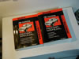

2001-2004 Toyota Tacoma Factory Service Manual
This index contains the following documents:
New Features
Wiring Manual
Repair Manual Volume 1
Repair Manual Volume 2
New Features
New Features
5VZFE Engine
Appendix
Wiring Manual
Index
Foreword
Introduction
How to Use
Troubleshooting
Abbreviations
Glossary of Terms and Symbols
Relay Locations
Electrical Wiring Routing 1
Electrical Wiring Routing 2
System Circuits
System Circuits
Power Source
Starting and Ignition (5VZ-FE)
Starting (3RZ-FE, 2RZ-FE)
Ignition (3RZ-FE, 2RZ-FE)
Charging
Engine Control (5VZ–FE EXCEPT 2WD M/T)
Engine Control (5VZ–FE 2WD M/T)
Engine Control (3RZ–FE)
Engine Control (2RZ–FE)
Headlight (w/o Daytime Running Light)
Headlight (w/ Daytime Running Light)
Interior Light
Taillight and Illumination
Turn Signal and Hazard Warning
Stop Light
Back-up Light
Light Auto Turn Off
Electronically Controlled Transmission (5VZ–FE)
Electronically Controlled Transmission (3RZ–FE)
Automatic Transmission (2RZ-FE)
Cruise Control (EXCEPT 5VZ–FE 2WD M/T, 3RZ–FE AND 2RZ–FE)
Cruise Control (5VZ–FE 2WD M/T, 3RZ–FE AND 2RZ–FE)
ABS
Horn
SRS
4WD (w/ 2–4 SELECT SW)
4WD (w/o 2–4 SELECT SW)
Rear Differential Lock
Shift Lock
Door Lock Control
Power Window
Remote Control Mirror (w/ Power Window)
Remote Control Mirror (w/o Power Window)
Wiper and Washer (w/ INT TIME SW MECHANISM)
Wiper and Washer (w/o INT TIME SW MECHANISM)
Key Reminder and Seat Belt Warning
Power Outlet
Cigarette Lighter and Clock
Power Seat
Radio and Player
Combination Meter (w/ Tachometer)
Combination Meter (w/o Tachometer)
Air Conditioning
Ground Point
Power Source (Current Flow Chart)
Connector List
Part Number of Connectors
Overall Electrical Wiring Diagram 1
Overall Electrical Wiring Diagram 2
Repair Manual Volume 1
IN - Introduction - Warnings - How-To
Foreword
Caution
How to Use this Manual
Identification Information
Repair Instructions
Vehicle Lift and Support Locations
For All Vehicles - Precaution
How to Troubleshoot ECU Controlled Systems
How to Proceed with Troubleshooting
How to Use the Diagnostic Chart and Inspection Procedure
Terms - Abbreviations Used in This Manual
Glossary of SAE and Toyota Terms
MA - Maintenance
Maintenance##Outside Vehicle
Maintenance##Inside Vehicle
Maintenance##Under Hood
Maintenance##Engine Inspection
Maintenance##Brake Inspection
Maintenance##Chassis Inspection
Maintenance##Body Inspection
PP - Preparation
Preparation##Maintenance##Equipment
Preparation##Engine Mechanical (2RZ-FE, 3RZ-FE)##Special Service Tools
Preparation##Engine Mechanical (2RZ-FE, 3RZ-FE)##Recommended Tools
Preparation##Engine Mechanical (2RZ-FE, 3RZ-FE)##Equipment
Preparation##Engine Mechanical (5VZ-FE)##Special Service Tools
Preparation##Engine Mechanical (5VZ-FE)##Recommended Tools
Preparation##Engine Mechanical (5VZ-FE)##Equipment
Preparation##Emission Control (2RZ-FE, 3RZ-FE)##Equipment
Preparation##Emission Control (5VZ-FE)##Recommended Tools
Preparation##Emission Control (5VZ-FE)##Equipment
Preparation##SFI (2RZ-FE, 3RZ-FE)##Special Service Tools
Preparation##SFI (2RZ-FE, 3RZ-FE)##Recommended Tools
Preparation##SFI (2RZ-FE, 3RZ-FE)##Equipment
Preparation##SFI (5VZ-FE)##Special Service Tools
Preparation##SFI (5VZ-FE)##Recommended Tools
Preparation##SFI (5VZ-FE)##Equipment
Preparation##Cooling (2RZ-FE, 3RZ-FE)
Preparation##Cooling (2RZ-FE, 3RZ-FE)##Equipment
Preparation##Cooling (5VZ-FE)
Preparation##Cooling (5VZ-FE)##Equipment
Preparation##Cooling (5VZ-FE)##Special Service Tools
Preparation##Lubrication (2RZ-FE, 3RZ-FE)
Preparation##Lubrication (2RZ-FE, 3RZ-FE)##Equipment
Preparation##Lubrication (2RZ-FE, 3RZ-FE)##Special Service Tools
Preparation##Lubrication (2RZ-FE, 3RZ-FE)##Recommended Tools
Preparation##Lubrication (5VZ-FE)
Preparation##Lubrication (5VZ-FE)##Equipment
Preparation##Lubrication (5VZ-FE)##Special Service Tools
Preparation##Lubrication (5VZ-FE)##Recommended Tools
Preparation##Ignition (2RZ-FE, 3RZ-FE)##Equipment
Preparation##Ignition (2RZ-FE, 3RZ-FE)##Recommended Tools
Preparation##Ignition (5VZ-FE)##Equipment
Preparation##Ignition (5VZ-FE)##Recommended Tools
Preparation##Starting (2RZ-FE, 3RZ-FE)##Equipment
Preparation##Starting (2RZ-FE, 3RZ-FE)##Recommended Tools
Preparation##Starting (2RZ-FE, 3RZ-FE)##Special Service Tools
Preparation##Starting (5VZ-FE)##Equipment
Preparation##Starting (5VZ-FE)##Recommended Tools
Preparation##Starting (5VZ-FE)##Special Service Tools
Preparation##Charging (2RZ-FE, 3RZ-FE)##Equipment
Preparation##Charging (2RZ-FE, 3RZ-FE)##Recommended Tools
Preparation##Charging (2RZ-FE, 3RZ-FE)##Special Service Tools
Preparation##Charging (5VZ-FE)##Equipment
Preparation##Charging (5VZ-FE)##Recommended Tools
Preparation##Charging (5VZ-FE)##Special Service Tools
Preparation##Clutch##Equipment
Preparation##Clutch##Recommended Tools
Preparation##Clutch##Special Service Tools
Preparation##Manual Transmission (R150, R150F)##Equipment
Preparation##Manual Transmission (R150, R150F)##Lubrication
Preparation##Manual Transmission (R150, R150F)##Recommended Tools
Preparation##Manual Transmission (R150, R150F)##Special Service Tools
Preparation##Manual Transmission (W59)##Equipment
Preparation##Manual Transmission (W59)##Lubrication
Preparation##Manual Transmission (W59)##Recommended Tools
Preparation##Manual Transmission (W59)##Special Service Tools
Preparation##Automatic Transmission (A340E, A340F)##Equipment
Preparation##Automatic Transmission (A340E, A340F)##Lubrication
Preparation##Automatic Transmission (A340E, A340F)##Recommended Tools
Preparation##Automatic Transmission (A340E, A340F)##Special Service Tools
Preparation##Automatic Transmission (A44D)##Equipment
Preparation##Automatic Transmission (A44D)##Lubrication
Preparation##Automatic Transmission (A44D)##Recommended Tools
Preparation##Automatic Transmission (A44D)##Special Service Tools
Preparation##Transfer##Equipment
Preparation##Transfer##Lubrication
Preparation##Transfer##Recommended Tools
Preparation##Transfer##Special Service Tools
Preparation##Propeller Shaft##Equipment
Preparation##Propeller Shaft##Special Service Tools
Preparation##Suspension and Axle##Equipment
Preparation##Suspension and Axle##Lubrication
Preparation##Suspension and Axle##Recommended Tools
Preparation##Suspension and Axle##Special Service Materials
Preparation##Suspension and Axle##Special Service Tools
Preparation##Brake##Equipment
Preparation##Brake##Lubrication
Preparation##Brake##Recommended Tools
Preparation##Brake##Special Service Tools
Preparation##Steering##Equipment
Preparation##Steering##Lubrication
Preparation##Steering##Recommended Tools
Preparation##Steering##Special Service Materials
Preparation##Steering##Special Service Tools
Preparation##Supplemental Restraint System##Equipment
Preparation##Supplemental Restraint System##Recommended Tools
Preparation##Supplemental Restraint System##Special Service Tools
Preparation##Body Electrical##Equipment
Preparation##Body Electrical##Recommended Tools
Preparation##Body Electrical##Special Service Tools
Preparation##Body##Equipment
Preparation##Body##Lubrication
Preparation##Body##Special Service Materials
Preparation##Body##Special Service Tools
Preparation##Air Conditioning##Equipment
Preparation##Air Conditioning##Lubrication
Preparation##Air Conditioning##Recommended Tools
Preparation##Air Conditioning##Special Service Tools
SS - Service Specifications
Service Specifications##Standard Bolt##How to Determine Bolt Strength
Service Specifications##Standard Bolt##Specified Torque for Standard Bolts
Service Specifications##Standard Bolt##How to Determine Nut Strength
Service Specifications##Engine Mechanical (2RZ-FE, 3RZ-FE)##Service Data
Service Specifications##Engine Mechanical (2RZ-FE, 3RZ-FE)##Torque Specifications
Service Specifications##Engine Mechanical (5VZ-FE)##Service Data
Service Specifications##Engine Mechanical (5VZ-FE)##Torque Specifications
Service Specifications##Emissions Control (2RZ-FE, 3RZ-FE)##Torque Specifications
Service Specifications##Emissions Control (5VZ-FE)##Torque Specifications
Service Specifications##SFI (2RZ-FE, 3RZ-FE)##Service Data
Service Specifications##SFI (2RZ-FE, 3RZ-FE)##Torque Specifications
Service Specifications##SFI (5VZ-FE)##Service Data
Service Specifications##SFI (5VZ-FE)##Torque Specifications
Service Specifications##Cooling (2RZ-FE, 3RZ-FE)##Service Data
Service Specifications##Cooling (2RZ-FE, 3RZ-FE)##Torque Specifications
Service Specifications##Cooling (5VZ-FE)##Service Data
Service Specifications##Cooling (5VZ-FE)##Torque Specifications
Service Specifications##Lubrication (2RZ-FE, 3RZ-FE)##Service Data
Service Specifications##Lubrication (2RZ-FE, 3RZ-FE)##Torque Specifications
Service Specifications##Lubrication (5VZ-FE)##Service Data
Service Specifications##Lubrication (5VZ-FE)##Torque Specifications
Service Specifications##Ignition (2RZ-FE, 3RZ-FE)##Service Data
Service Specifications##Ignition (2RZ-FE, 3RZ-FE)##Torque Specifications
Service Specifications##Ignition (5VZ-FE)##Service Data
Service Specifications##Ignition (5VZ-FE)##Torque Specifications
Service Specifications##Starting (2RZ-FE, 3RZ-FE)##Service Data
Service Specifications##Starting (2RZ-FE, 3RZ-FE)##Torque Specifications
Service Specifications##Starting (5VZ-FE)##Service Data
Service Specifications##Starting (5VZ-FE)##Torque Specifications
Service Specifications##Charging (2RZ-FE, 3RZ-FE)##Service Data
Service Specifications##Charging (2RZ-FE, 3RZ-FE)##Torque Specifications
Service Specifications##Charging (5VZ-FE)##Service Data
Service Specifications##Charging (5VZ-FE)##Torque Specifications
Service Specifications##Clutch##Service Data
Service Specifications##Clutch##Torque Specifications
Service Specifications##Manual Transmission (R150F)##Service Data
Service Specifications##Manual Transmission (R150F)##Torque Specifications
Service Specifications##Manual Transmission (W59)##Service Data
Service Specifications##Manual Transmission (W59)##Torque Specifications
Service Specifications##Automatic Transmission (A340E, A340F)##Service Data
Service Specifications##Automatic Transmission (A340E, A340F)##Torque Specifications
Service Specifications##Automatic Transmission (A44D)##Service Data
Service Specifications##Automatic Transmission (A44D)##Torque Specifications
Service Specifications##Transfer##Service Data
Service Specifications##Transfer##Torque Specifications
Service Specifications##Propeller Shaft##Service Data
Service Specifications##Propeller Shaft##Torque Specifications
Service Specifications##Suspension and Axle##Service Data
Service Specifications##Suspension and Axle##Torque Specifications
Service Specifications##Brake##Service Data
Service Specifications##Brake##Torque Specifications
Service Specifications##Steering##Service Data
Service Specifications##Steering##Torque Specifications
Service Specifications##Supplemental Restraint System##Torque Specifications
Service Specifications##Body Electrical##Service Data
Service Specifications##Body##Torque Specifications
Service Specifications##Air Conditioning##Service Data
Service Specifications##Air Conditioning##Torque Specifications
DI - Diagnostics
Diagnostics##Anti-Lock Brake System##ciabswar.pdf
Diagnostics##Anti-Lock Brake System##cialways.pdf
Diagnostics##Anti-Lock Brake System##cic0200t.pdf
Diagnostics##Anti-Lock Brake System##cic0226t.pdf
Diagnostics##Anti-Lock Brake System##cic0273c.pdf
Diagnostics##Anti-Lock Brake System##cic0278c.pdf
Diagnostics##Anti-Lock Brake System##cic1237.pdf
Diagnostics##Anti-Lock Brake System##cic1241.pdf
Diagnostics##Anti-Lock Brake System##cic1243c.pdf
Diagnostics##Anti-Lock Brake System##cic1244.pdf
Diagnostics##Anti-Lock Brake System##cic1248.pdf
Diagnostics##Anti-Lock Brake System##cic1249.pdf
Diagnostics##Anti-Lock Brake System##cic1251.pdf
Diagnostics##Anti-Lock Brake System##cicheckf.pdf
Diagnostics##Anti-Lock Brake System##citcterm.pdf
Diagnostics##Anti-Lock Brake System##citsterm.pdf
Diagnostics##Anti-Lock Brake System##Customer Problem Analysis Check
Diagnostics##Anti-Lock Brake System##Diagnostic Trouble Code Chart
Diagnostics##Anti-Lock Brake System##How to Proceed with Troubleshooting
Diagnostics##Anti-Lock Brake System##Parts Location
Diagnostics##Anti-Lock Brake System##Pre Check
Diagnostics##Anti-Lock Brake System##Problem Symptoms Table
Diagnostics##Anti-Lock Brake System##Terminals of ECU
Diagnostics##Automatic Transmission (A340E, A340F)##ciodcanc.pdf
Diagnostics##Automatic Transmission (A340E, A340F)##ciodmain.pdf
Diagnostics##Automatic Transmission (A340E, A340F)##cip0500.pdf
Diagnostics##Automatic Transmission (A340E, A340F)##cip0705p.pdf
Diagnostics##Automatic Transmission (A340E, A340F)##cip0710p.pdf
Diagnostics##Automatic Transmission (A340E, A340F)##cip0722.pdf
Diagnostics##Automatic Transmission (A340E, A340F)##cip0724.pdf
Diagnostics##Automatic Transmission (A340E, A340F)##cip0741.pdf
Diagnostics##Automatic Transmission (A340E, A340F)##cip0743.pdf
Diagnostics##Automatic Transmission (A340E, A340F)##cip0751p.pdf
Diagnostics##Automatic Transmission (A340E, A340F)##cip0753p.pdf
Diagnostics##Automatic Transmission (A340E, A340F)##cip0818.pdf
Diagnostics##Automatic Transmission (A340E, A340F)##cip09730.pdf
Diagnostics##Automatic Transmission (A340E, A340F)##cip1782.pdf
Diagnostics##Automatic Transmission (A340E, A340F)##cip2716.pdf
Diagnostics##Automatic Transmission (A340E, A340F)##cipatter.pdf
Diagnostics##Automatic Transmission (A340E, A340F)##Customer Problem Analysis Check
Diagnostics##Automatic Transmission (A340E, A340F)##Diagnostic Trouble Code Chart
Diagnostics##Automatic Transmission (A340E, A340F)##How to Proceed with Troubleshooting
Diagnostics##Automatic Transmission (A340E, A340F)##Parts Location
Diagnostics##Automatic Transmission (A340E, A340F)##Pre Check
Diagnostics##Automatic Transmission (A340E, A340F)##Problem Symptoms Table
Diagnostics##Automatic Transmission (A340E, A340F)##Terminals of ECM
Diagnostics##Body Control System##cidoo.pdf
Diagnostics##Body Control System##cidoorco.pdf
Diagnostics##Body Control System##cidoorke.pdf
Diagnostics##Body Control System##cidoorlo.pdf
Diagnostics##Body Control System##cidoorun.pdf
Diagnostics##Body Control System##cidriver.pdf
Diagnostics##Body Control System##ciheadli.pdf
Diagnostics##Body Control System##ciigniti.pdf
Diagnostics##Body Control System##ciillumi.pdf
Diagnostics##Body Control System##cikeyunl.pdf
Diagnostics##Body Control System##cilightc.pdf
Diagnostics##Body Control System##cipowerm.pdf
Diagnostics##Body Control System##cipowers.pdf
Diagnostics##Body Control System##citailli.pdf
Diagnostics##Body Control System##Customer Problem Analysis Check
Diagnostics##Body Control System##How to Proceed with Troubleshooting
Diagnostics##Body Control System##Parts Location
Diagnostics##Body Control System##Problem Symptoms Table
Diagnostics##Body Control System##Terminals of ECU
Diagnostics##Cruise Control System (w/ ETCS-i)##ciccs.pdf
Diagnostics##Cruise Control System (w/ ETCS-i)##ciclutch.pdf
Diagnostics##Cruise Control System (w/ ETCS-i)##ciindica.pdf
Diagnostics##Cruise Control System (w/ ETCS-i)##cip05002.pdf
Diagnostics##Cruise Control System (w/ ETCS-i)##cip05715.pdf
Diagnostics##Cruise Control System (w/ ETCS-i)##cip06075.pdf
Diagnostics##Cruise Control System (w/ ETCS-i)##cipnsw.pdf
Diagnostics##Cruise Control System (w/ ETCS-i)##Customer Problem Analysis Check
Diagnostics##Cruise Control System (w/ ETCS-i)##Diagnostic Trouble Code Chart
Diagnostics##Cruise Control System (w/ ETCS-i)##How to Proceed with Troubleshooting
Diagnostics##Cruise Control System (w/ ETCS-i)##Parts Location
Diagnostics##Cruise Control System (w/ ETCS-i)##Pre Check
Diagnostics##Cruise Control System (w/ ETCS-i)##Problem Symptoms Table
Diagnostics##Cruise Control System (w/ ETCS-i)##Terminals of ECU
Diagnostics##Cruise Control System (w/o ETCS-i)##ci1115.pdf
Diagnostics##Cruise Control System (w/o ETCS-i)##ci12.pdf
Diagnostics##Cruise Control System (w/o ETCS-i)##ci14.pdf
Diagnostics##Cruise Control System (w/o ETCS-i)##ci21.pdf
Diagnostics##Cruise Control System (w/o ETCS-i)##ci23.pdf
Diagnostics##Cruise Control System (w/o ETCS-i)##ci51.pdf
Diagnostics##Cruise Control System (w/o ETCS-i)##ciactcab.pdf
Diagnostics##Cruise Control System (w/o ETCS-i)##cib.pdf
Diagnostics##Cruise Control System (w/o ETCS-i)##cid.pdf
Diagnostics##Cruise Control System (w/o ETCS-i)##ciect.pdf
Diagnostics##Cruise Control System (w/o ETCS-i)##cinc.pdf
Diagnostics##Cruise Control System (w/o ETCS-i)##cipi.pdf
Diagnostics##Cruise Control System (w/o ETCS-i)##cistp.pdf
Diagnostics##Cruise Control System (w/o ETCS-i)##citc.pdf
Diagnostics##Cruise Control System (w/o ETCS-i)##Customer Problem Analysis Check
Diagnostics##Cruise Control System (w/o ETCS-i)##Diagnostic Trouble Code Chart
Diagnostics##Cruise Control System (w/o ETCS-i)##How to Proceed with Troubleshooting
Diagnostics##Cruise Control System (w/o ETCS-i)##Parts Location
Diagnostics##Cruise Control System (w/o ETCS-i)##Pre Check
Diagnostics##Cruise Control System (w/o ETCS-i)##Problem Symptoms Table
Diagnostics##Cruise Control System (w/o ETCS-i)##Terminals of ECU
Diagnostics##Engine (2RZ–FE, 3RZ–FE)##ciecmpow.pdf
Diagnostics##Engine (2RZ–FE, 3RZ–FE)##cifuelpu.pdf
Diagnostics##Engine (2RZ–FE, 3RZ–FE)##cip0036.pdf
Diagnostics##Engine (2RZ–FE, 3RZ–FE)##cip0100.pdf
Diagnostics##Engine (2RZ–FE, 3RZ–FE)##cip0101.pdf
Diagnostics##Engine (2RZ–FE, 3RZ–FE)##cip0110.pdf
Diagnostics##Engine (2RZ–FE, 3RZ–FE)##cip0115.pdf
Diagnostics##Engine (2RZ–FE, 3RZ–FE)##cip0116p.pdf
Diagnostics##Engine (2RZ–FE, 3RZ–FE)##cip0120.pdf
Diagnostics##Engine (2RZ–FE, 3RZ–FE)##cip0121.pdf
Diagnostics##Engine (2RZ–FE, 3RZ–FE)##cip0128.pdf
Diagnostics##Engine (2RZ–FE, 3RZ–FE)##cip0134.pdf
Diagnostics##Engine (2RZ–FE, 3RZ–FE)##cip0135.pdf
Diagnostics##Engine (2RZ–FE, 3RZ–FE)##cip0136.pdf
Diagnostics##Engine (2RZ–FE, 3RZ–FE)##cip0171p.pdf
Diagnostics##Engine (2RZ–FE, 3RZ–FE)##cip0300p.pdf
Diagnostics##Engine (2RZ–FE, 3RZ–FE)##cip0325.pdf
Diagnostics##Engine (2RZ–FE, 3RZ–FE)##cip0335p.pdf
Diagnostics##Engine (2RZ–FE, 3RZ–FE)##cip0340p.pdf
Diagnostics##Engine (2RZ–FE, 3RZ–FE)##cip03510.pdf
Diagnostics##Engine (2RZ–FE, 3RZ–FE)##cip0401.pdf
Diagnostics##Engine (2RZ–FE, 3RZ–FE)##cip0402.pdf
Diagnostics##Engine (2RZ–FE, 3RZ–FE)##cip0420.pdf
Diagnostics##Engine (2RZ–FE, 3RZ–FE)##cip0441p.pdf
Diagnostics##Engine (2RZ–FE, 3RZ–FE)##cip0442p.pdf
Diagnostics##Engine (2RZ–FE, 3RZ–FE)##cip0450p.pdf
Diagnostics##Engine (2RZ–FE, 3RZ–FE)##cip0500.pdf
Diagnostics##Engine (2RZ–FE, 3RZ–FE)##cip0505p.pdf
Diagnostics##Engine (2RZ–FE, 3RZ–FE)##cip0560.pdf
Diagnostics##Engine (2RZ–FE, 3RZ–FE)##cip0617.pdf
Diagnostics##Engine (2RZ–FE, 3RZ–FE)##cip0705p.pdf
Diagnostics##Engine (2RZ–FE, 3RZ–FE)##cip0724.pdf
Diagnostics##Engine (2RZ–FE, 3RZ–FE)##cip2195p.pdf
Diagnostics##Engine (2RZ–FE, 3RZ–FE)##cip2237.pdf
Diagnostics##Engine (2RZ–FE, 3RZ–FE)##cip2a00.pdf
Diagnostics##Engine (2RZ–FE, 3RZ–FE)##Customer Problem Analysis Check
Diagnostics##Engine (2RZ–FE, 3RZ–FE)##Diagnostic Trouble Code Chart
Diagnostics##Engine (2RZ–FE, 3RZ–FE)##How to Proceed with Troubleshooting
Diagnostics##Engine (2RZ–FE, 3RZ–FE)##Parts Location
Diagnostics##Engine (2RZ–FE, 3RZ–FE)##Pre Check
Diagnostics##Engine (2RZ–FE, 3RZ–FE)##Problem Symptoms Table
Diagnostics##Engine (2RZ–FE, 3RZ–FE)##Terminals of ECM
Diagnostics##Engine (5VZ–FE)##ciecmpow.pdf
Diagnostics##Engine (5VZ–FE)##cifuelpu.pdf
Diagnostics##Engine (5VZ–FE)##cip00313.pdf
Diagnostics##Engine (5VZ–FE)##cip00373.pdf
Diagnostics##Engine (5VZ–FE)##cip01.pdf
Diagnostics##Engine (5VZ–FE)##cip01001.pdf
Diagnostics##Engine (5VZ–FE)##cip0101.pdf
Diagnostics##Engine (5VZ–FE)##cip01101.pdf
Diagnostics##Engine (5VZ–FE)##cip01151.pdf
Diagnostics##Engine (5VZ–FE)##cip01161.pdf
Diagnostics##Engine (5VZ–FE)##cip01202.pdf
Diagnostics##Engine (5VZ–FE)##cip0121.pdf
Diagnostics##Engine (5VZ–FE)##cip0128.pdf
Diagnostics##Engine (5VZ–FE)##cip0134.pdf
Diagnostics##Engine (5VZ–FE)##cip0136.pdf
Diagnostics##Engine (5VZ–FE)##cip01710.pdf
Diagnostics##Engine (5VZ–FE)##cip0300p.pdf
Diagnostics##Engine (5VZ–FE)##cip03250.pdf
Diagnostics##Engine (5VZ–FE)##cip03350.pdf
Diagnostics##Engine (5VZ–FE)##cip03403.pdf
Diagnostics##Engine (5VZ–FE)##cip0351.pdf
Diagnostics##Engine (5VZ–FE)##cip0420.pdf
Diagnostics##Engine (5VZ–FE)##cip0441p.pdf
Diagnostics##Engine (5VZ–FE)##cip0442p.pdf
Diagnostics##Engine (5VZ–FE)##cip04515.pdf
Diagnostics##Engine (5VZ–FE)##cip05.pdf
Diagnostics##Engine (5VZ–FE)##cip0500p.pdf
Diagnostics##Engine (5VZ–FE)##cip0505w.pdf
Diagnostics##Engine (5VZ–FE)##cip0560.pdf
Diagnostics##Engine (5VZ–FE)##cip06046.pdf
Diagnostics##Engine (5VZ–FE)##cip0617.pdf
Diagnostics##Engine (5VZ–FE)##cip0705p.pdf
Diagnostics##Engine (5VZ–FE)##cip0724.pdf
Diagnostics##Engine (5VZ–FE)##cip1126.pdf
Diagnostics##Engine (5VZ–FE)##cip21022.pdf
Diagnostics##Engine (5VZ–FE)##cip21112.pdf
Diagnostics##Engine (5VZ–FE)##cip2118.pdf
Diagnostics##Engine (5VZ–FE)##cip2119.pdf
Diagnostics##Engine (5VZ–FE)##cip21202.pdf
Diagnostics##Engine (5VZ–FE)##cip2121.pdf
Diagnostics##Engine (5VZ–FE)##cip21952.pdf
Diagnostics##Engine (5VZ–FE)##cip22373.pdf
Diagnostics##Engine (5VZ–FE)##cip2a00.pdf
Diagnostics##Engine (5VZ–FE)##Customer Problem Analysis Check
Diagnostics##Engine (5VZ–FE)##Diagnostic Trouble Code Chart
Diagnostics##Engine (5VZ–FE)##How to Proceed with Troubleshooting
Diagnostics##Engine (5VZ–FE)##Parts Location
Diagnostics##Engine (5VZ–FE)##Pre Check
Diagnostics##Engine (5VZ–FE)##Problem Symptoms Table
Diagnostics##Engine (5VZ–FE)##Terminals of ECM
Diagnostics##Supplemental Restraint System##cialways.pdf
Diagnostics##Supplemental Restraint System##cib01001.pdf
Diagnostics##Supplemental Restraint System##cib01011.pdf
Diagnostics##Supplemental Restraint System##cib01021.pdf
Diagnostics##Supplemental Restraint System##cib01031.pdf
Diagnostics##Supplemental Restraint System##cib01055.pdf
Diagnostics##Supplemental Restraint System##cib01065.pdf
Diagnostics##Supplemental Restraint System##cib01075.pdf
Diagnostics##Supplemental Restraint System##cib01085.pdf
Diagnostics##Supplemental Restraint System##cib01306.pdf
Diagnostics##Supplemental Restraint System##cib01316.pdf
Diagnostics##Supplemental Restraint System##cib01326.pdf
Diagnostics##Supplemental Restraint System##cib01336.pdf
Diagnostics##Supplemental Restraint System##cib01357.pdf
Diagnostics##Supplemental Restraint System##cib01367.pdf
Diagnostics##Supplemental Restraint System##cib01377.pdf
Diagnostics##Supplemental Restraint System##cib01387.pdf
Diagnostics##Supplemental Restraint System##cib11003.pdf
Diagnostics##Supplemental Restraint System##cib1156b.pdf
Diagnostics##Supplemental Restraint System##cib1158b.pdf
Diagnostics##Supplemental Restraint System##cidoesno.pdf
Diagnostics##Supplemental Restraint System##cinormal.pdf
Diagnostics##Supplemental Restraint System##citcterm.pdf
Diagnostics##Supplemental Restraint System##Customer Problem Analysis Check
Diagnostics##Supplemental Restraint System##Diagnostic Trouble Code Chart
Diagnostics##Supplemental Restraint System##How to Proceed with Troubleshooting
Diagnostics##Supplemental Restraint System##Parts Location
Diagnostics##Supplemental Restraint System##Pre Check
Diagnostics##Supplemental Restraint System##Problem Symptoms Table
Diagnostics##Supplemental Restraint System##Terminals of ECU
Repair Manual Volume 2
EM - Engine Mechanical
Repair Manual##Engine Mechanical (2RZ-FE, 3RZ-FE)##CO/HC##Inspection
Repair Manual##Engine Mechanical (2RZ-FE, 3RZ-FE)##Compression##Inspection
Repair Manual##Engine Mechanical (2RZ-FE, 3RZ-FE)##Cylinder Block##Components
Repair Manual##Engine Mechanical (2RZ-FE, 3RZ-FE)##Cylinder Block##Disassembly
Repair Manual##Engine Mechanical (2RZ-FE, 3RZ-FE)##Cylinder Block##Inspection
Repair Manual##Engine Mechanical (2RZ-FE, 3RZ-FE)##Cylinder Block##Reassembly
Repair Manual##Engine Mechanical (2RZ-FE, 3RZ-FE)##Cylinder Block##Replacement
Repair Manual##Engine Mechanical (2RZ-FE, 3RZ-FE)##Cylinder Head##Components
Repair Manual##Engine Mechanical (2RZ-FE, 3RZ-FE)##Cylinder Head##Disassembly
Repair Manual##Engine Mechanical (2RZ-FE, 3RZ-FE)##Cylinder Head##Inspection
Repair Manual##Engine Mechanical (2RZ-FE, 3RZ-FE)##Cylinder Head##Installation
Repair Manual##Engine Mechanical (2RZ-FE, 3RZ-FE)##Cylinder Head##Reassembly
Repair Manual##Engine Mechanical (2RZ-FE, 3RZ-FE)##Cylinder Head##Removal
Repair Manual##Engine Mechanical (2RZ-FE, 3RZ-FE)##Cylinder Head##Replacement
Repair Manual##Engine Mechanical (2RZ-FE, 3RZ-FE)##Engine Unit (2WD)##Components
Repair Manual##Engine Mechanical (2RZ-FE, 3RZ-FE)##Engine Unit (2WD)##Installation
Repair Manual##Engine Mechanical (2RZ-FE, 3RZ-FE)##Engine Unit (2WD)##Removal
Repair Manual##Engine Mechanical (2RZ-FE, 3RZ-FE)##Engine Unit (4WD)##Components
Repair Manual##Engine Mechanical (2RZ-FE, 3RZ-FE)##Engine Unit (4WD)##Installation
Repair Manual##Engine Mechanical (2RZ-FE, 3RZ-FE)##Engine Unit (4WD)##Removal
Repair Manual##Engine Mechanical (2RZ-FE, 3RZ-FE)##Exhaust System##Components
Repair Manual##Engine Mechanical (2RZ-FE, 3RZ-FE)##Idle Speed##Inspection
Repair Manual##Engine Mechanical (2RZ-FE, 3RZ-FE)##Ignition Timing##Inspection
Repair Manual##Engine Mechanical (2RZ-FE, 3RZ-FE)##Timing Chain##Components
Repair Manual##Engine Mechanical (2RZ-FE, 3RZ-FE)##Timing Chain##Inspection
Repair Manual##Engine Mechanical (2RZ-FE, 3RZ-FE)##Timing Chain##Installation
Repair Manual##Engine Mechanical (2RZ-FE, 3RZ-FE)##Timing Chain##Removal
Repair Manual##Engine Mechanical (2RZ-FE, 3RZ-FE)##Valve Clearance##Inspection
Repair Manual##Engine Mechanical (5VZ-FE)##CO/HC##Inspection
Repair Manual##Engine Mechanical (5VZ-FE)##Compression##Inspection
Repair Manual##Engine Mechanical (5VZ-FE)##Cylinder Block##Components
Repair Manual##Engine Mechanical (5VZ-FE)##Cylinder Block##Disassembly
Repair Manual##Engine Mechanical (5VZ-FE)##Cylinder Block##Inspection
Repair Manual##Engine Mechanical (5VZ-FE)##Cylinder Block##Reassembly
Repair Manual##Engine Mechanical (5VZ-FE)##Cylinder Block##Replacement
Repair Manual##Engine Mechanical (5VZ-FE)##Cylinder Head##Components
Repair Manual##Engine Mechanical (5VZ-FE)##Cylinder Head##Disassembly
Repair Manual##Engine Mechanical (5VZ-FE)##Cylinder Head##Inspection
Repair Manual##Engine Mechanical (5VZ-FE)##Cylinder Head##Installation
Repair Manual##Engine Mechanical (5VZ-FE)##Cylinder Head##Reassembly
Repair Manual##Engine Mechanical (5VZ-FE)##Cylinder Head##Removal
Repair Manual##Engine Mechanical (5VZ-FE)##Cylinder Head##Replacement
Repair Manual##Engine Mechanical (5VZ-FE)##Engine Unit (2WD)##Components
Repair Manual##Engine Mechanical (5VZ-FE)##Engine Unit (2WD)##Installation
Repair Manual##Engine Mechanical (5VZ-FE)##Engine Unit (2WD)##Removal
Repair Manual##Engine Mechanical (5VZ-FE)##Engine Unit (4WD)##Components
Repair Manual##Engine Mechanical (5VZ-FE)##Engine Unit (4WD)##Installation
Repair Manual##Engine Mechanical (5VZ-FE)##Engine Unit (4WD)##Removal
Repair Manual##Engine Mechanical (5VZ-FE)##Exhaust System##Components
Repair Manual##Engine Mechanical (5VZ-FE)##Idle Speed##Inspection
Repair Manual##Engine Mechanical (5VZ-FE)##Ignition Timing##Inspection
Repair Manual##Engine Mechanical (5VZ-FE)##Timing Belt##Components
Repair Manual##Engine Mechanical (5VZ-FE)##Timing Belt##Inspection
Repair Manual##Engine Mechanical (5VZ-FE)##Timing Belt##Installation
Repair Manual##Engine Mechanical (5VZ-FE)##Timing Belt##Removal
Repair Manual##Engine Mechanical (5VZ-FE)##Valve Clearance##Inspection
EC - Emission Control
Repair Manual##Emissions Control (2RZ-FE, 3RZ-FE)##Emission Control System##Purpose
Repair Manual##Emissions Control (2RZ-FE, 3RZ-FE)##Evaporative (EVAP) Emission Control System##Components
Repair Manual##Emissions Control (2RZ-FE, 3RZ-FE)##Evaporative (EVAP) Emission Control System##Inspection
Repair Manual##Emissions Control (2RZ-FE, 3RZ-FE)##Exhaust Gas Recirculation (EGR) System##Inspection
Repair Manual##Emissions Control (2RZ-FE, 3RZ-FE)##Positive Crankcase Ventilation (PCV) System##Inspection
Repair Manual##Emissions Control (2RZ-FE, 3RZ-FE)##Parts Layout and Schematic Drawing##Drawing
Repair Manual##Emissions Control (2RZ-FE, 3RZ-FE)##Parts Layout and Schematic Drawing##Location
Repair Manual##Emissions Control (2RZ-FE, 3RZ-FE)##Three-Way Catalytic Converter (TWC)##Components
Repair Manual##Emissions Control (2RZ-FE, 3RZ-FE)##Three-Way Catalytic Converter (TWC)##On-Vehicle Inspection
Repair Manual##Emissions Control (5VZ-FE)##Emission Control System##Purpose
Repair Manual##Emissions Control (5VZ-FE)##Evaporative (EVAP) Emission Control System##Components
Repair Manual##Emissions Control (5VZ-FE)##Evaporative (EVAP) Emission Control System##Inspection
Repair Manual##Emissions Control (5VZ-FE)##Positive Crankcase Ventilation (PCV) System##Inspection
Repair Manual##Emissions Control (5VZ-FE)##Parts Layout and Schematic Drawing##Drawing
Repair Manual##Emissions Control (5VZ-FE)##Parts Layout and Schematic Drawing##Location
Repair Manual##Emissions Control (5VZ-FE)##Three-Way Catalytic Converter (TWC)##Components
Repair Manual##Emissions Control (5VZ-FE)##Three-Way Catalytic Converter (TWC)##On-Vehicle Inspection
SF - Fuel System
Repair Manual##SFI (2RZ-FE, 3RZ-FE)##Air-Fuel Ratio (A/F) Sensor##Components
Repair Manual##SFI (2RZ-FE, 3RZ-FE)##Air-Fuel Ratio (A/F) Sensor##Inspection
Repair Manual##SFI (2RZ-FE, 3RZ-FE)##Circuit Opening Relay##Components
Repair Manual##SFI (2RZ-FE, 3RZ-FE)##Circuit Opening Relay##Inspection
Repair Manual##SFI (2RZ-FE, 3RZ-FE)##Engine Control Module##Components
Repair Manual##SFI (2RZ-FE, 3RZ-FE)##Engine Control Module##Inspection
Repair Manual##SFI (2RZ-FE, 3RZ-FE)##Engine Coolant Temperature Sensor##Inspection
Repair Manual##SFI (2RZ-FE, 3RZ-FE)##Exhaust Gas Recirculation (EGR)##Inspection
Repair Manual##SFI (2RZ-FE, 3RZ-FE)##EFI Main Relay##Inspection
Repair Manual##SFI (2RZ-FE, 3RZ-FE)##Fuel Cut RPM##Inspection
Repair Manual##SFI (2RZ-FE, 3RZ-FE)##Fuel Pressure Regulator##Components
Repair Manual##SFI (2RZ-FE, 3RZ-FE)##Fuel Pressure Regulator##Installation
Repair Manual##SFI (2RZ-FE, 3RZ-FE)##Fuel Pressure Regulator##Removal
Repair Manual##SFI (2RZ-FE, 3RZ-FE)##Fuel Tank and Line##Components
Repair Manual##SFI (2RZ-FE, 3RZ-FE)##Fuel Tank and Line##Inspection
Repair Manual##SFI (2RZ-FE, 3RZ-FE)##Fuel Pump##Components
Repair Manual##SFI (2RZ-FE, 3RZ-FE)##Fuel Pump##Installation
Repair Manual##SFI (2RZ-FE, 3RZ-FE)##Fuel Pump##On-Vehicle Inspection
Repair Manual##SFI (2RZ-FE, 3RZ-FE)##Fuel Pump##Removal
Repair Manual##SFI (2RZ-FE, 3RZ-FE)##Heated Oxygen Sensor##Components
Repair Manual##SFI (2RZ-FE, 3RZ-FE)##Heated Oxygen Sensor##Inspection
Repair Manual##SFI (2RZ-FE, 3RZ-FE)##Idle Air Control Valve##Components
Repair Manual##SFI (2RZ-FE, 3RZ-FE)##Idle Air Control Valve##Inspection
Repair Manual##SFI (2RZ-FE, 3RZ-FE)##Idle Air Control Valve##Installation
Repair Manual##SFI (2RZ-FE, 3RZ-FE)##Idle Air Control Valve##On-Vehicle Inspection
Repair Manual##SFI (2RZ-FE, 3RZ-FE)##Idle Air Control Valve##Removal
Repair Manual##SFI (2RZ-FE, 3RZ-FE)##Injector##Components
Repair Manual##SFI (2RZ-FE, 3RZ-FE)##Injector##Inspection
Repair Manual##SFI (2RZ-FE, 3RZ-FE)##Injector##Installation
Repair Manual##SFI (2RZ-FE, 3RZ-FE)##Injector##On-Vehicle Inspection
Repair Manual##SFI (2RZ-FE, 3RZ-FE)##Injector##Removal
Repair Manual##SFI (2RZ-FE, 3RZ-FE)##Knock Sensor##Inspection
Repair Manual##SFI (2RZ-FE, 3RZ-FE)##Mass Air Flow (MAF) Meter##Components
Repair Manual##SFI (2RZ-FE, 3RZ-FE)##Mass Air Flow (MAF) Meter##Inspection
Repair Manual##SFI (2RZ-FE, 3RZ-FE)##Mass Air Flow (MAF) Meter##Installation
Repair Manual##SFI (2RZ-FE, 3RZ-FE)##Mass Air Flow (MAF) Meter##Removal
Repair Manual##SFI (2RZ-FE, 3RZ-FE)##SFI System##Precaution
Repair Manual##SFI (2RZ-FE, 3RZ-FE)##Throttle Body##Components
Repair Manual##SFI (2RZ-FE, 3RZ-FE)##Throttle Body##Inspection
Repair Manual##SFI (2RZ-FE, 3RZ-FE)##Throttle Body##Installation
Repair Manual##SFI (2RZ-FE, 3RZ-FE)##Throttle Body##On-Vehicle Inspection
Repair Manual##SFI (2RZ-FE, 3RZ-FE)##Throttle Body##Removal
Repair Manual##SFI (2RZ-FE, 3RZ-FE)##VSV for Canister Closed Valve (CCV)##Inspection
Repair Manual##SFI (2RZ-FE, 3RZ-FE)##VSV for Evaporative Emission (EVAP)##Components
Repair Manual##SFI (2RZ-FE, 3RZ-FE)##VSV for Evaporative Emission (EVAP)##Inspection
Repair Manual##SFI (2RZ-FE, 3RZ-FE)##VSV for Exhaust Gas Recirculation (EGR)##Inspection
Repair Manual##SFI (2RZ-FE, 3RZ-FE)##VSV for Pressure Switching Valve##Components
Repair Manual##SFI (2RZ-FE, 3RZ-FE)##VSV for Pressure Switching Valve##Inspection
Repair Manual##SFI (2RZ-FE, 3RZ-FE)##vps##Inspection
Repair Manual##SFI (5VZ-FE)##Air-Fuel Ratio (A/F) Sensor##Components
Repair Manual##SFI (5VZ-FE)##Air-Fuel Ratio (A/F) Sensor##Inspection
Repair Manual##SFI (5VZ-FE)##Circuit Opening Relay##Components
Repair Manual##SFI (5VZ-FE)##Circuit Opening Relay##Inspection
Repair Manual##SFI (5VZ-FE)##Engine Control Module##Components
Repair Manual##SFI (5VZ-FE)##Engine Control Module##Inspection
Repair Manual##SFI (5VZ-FE)##Engine Coolant Temperature Sensor##Components
Repair Manual##SFI (5VZ-FE)##Engine Coolant Temperature Sensor##Inspection
Repair Manual##SFI (5VZ-FE)##EFI Main Relay##Inspection
Repair Manual##SFI (5VZ-FE)##Fuel Cut RPM##Inspection
Repair Manual##SFI (5VZ-FE)##Fuel Pressure Regulator##Components
Repair Manual##SFI (5VZ-FE)##Fuel Pressure Regulator##Installation
Repair Manual##SFI (5VZ-FE)##Fuel Pressure Regulator##Removal
Repair Manual##SFI (5VZ-FE)##Fuel Tank and Line##Components
Repair Manual##SFI (5VZ-FE)##Fuel Tank and Line##Inspection
Repair Manual##SFI (5VZ-FE)##Fuel Pump##Components
Repair Manual##SFI (5VZ-FE)##Fuel Pump##Installation
Repair Manual##SFI (5VZ-FE)##Fuel Pump##On-Vehicle Inspection
Repair Manual##SFI (5VZ-FE)##Fuel Pump##Removal
Repair Manual##SFI (5VZ-FE)##Heated Oxygen Sensor##Components
Repair Manual##SFI (5VZ-FE)##Heated Oxygen Sensor##Inspection
Repair Manual##SFI (5VZ-FE)##Idle Air Control (IAC) Valve (w/o ETCS–i)##Components
Repair Manual##SFI (5VZ-FE)##Idle Air Control (IAC) Valve (w/o ETCS–i)##Inspection
Repair Manual##SFI (5VZ-FE)##Idle Air Control (IAC) Valve (w/o ETCS–i)##Installation
Repair Manual##SFI (5VZ-FE)##Idle Air Control (IAC) Valve (w/o ETCS–i)##On-Vehicle Inspection
Repair Manual##SFI (5VZ-FE)##Idle Air Control (IAC) Valve (w/o ETCS–i)##Removal
Repair Manual##SFI (5VZ-FE)##Injector##Components
Repair Manual##SFI (5VZ-FE)##Injector##Inspection
Repair Manual##SFI (5VZ-FE)##Injector##Installation
Repair Manual##SFI (5VZ-FE)##Injector##Removal
Repair Manual##SFI (5VZ-FE)##Knock Sensor##Components
Repair Manual##SFI (5VZ-FE)##Knock Sensor##Inspection
Repair Manual##SFI (5VZ-FE)##Mass Air Flow (MAF) Meter##Inspection
Repair Manual##SFI (5VZ-FE)##Mass Air Flow (MAF) Meter##Installation
Repair Manual##SFI (5VZ-FE)##Mass Air Flow (MAF) Meter##Removal
Repair Manual##SFI (5VZ-FE)##SFI System##Precaution
Repair Manual##SFI (5VZ-FE)##Throttle Body (w/ ETCS–i)##Components
Repair Manual##SFI (5VZ-FE)##Throttle Body (w/ ETCS–i)##Installation
Repair Manual##SFI (5VZ-FE)##Throttle Body (w/ ETCS–i)##On-Vehicle Inspection
Repair Manual##SFI (5VZ-FE)##Throttle Body (w/ ETCS–i)##Removal
Repair Manual##SFI (5VZ-FE)##Throttle Body (w/o ETCS–i)##Components
Repair Manual##SFI (5VZ-FE)##Throttle Body (w/o ETCS–i)##Inspection
Repair Manual##SFI (5VZ-FE)##Throttle Body (w/o ETCS–i)##Installation
Repair Manual##SFI (5VZ-FE)##Throttle Body (w/o ETCS–i)##On-Vehicle Inspection
Repair Manual##SFI (5VZ-FE)##Throttle Body (w/o ETCS–i)##Removal
Repair Manual##SFI (5VZ-FE)##VSV for Canister Closed Valve (CCV)##Inspection
Repair Manual##SFI (5VZ-FE)##VSV for Evaporative Emission (EVAP)##Components
Repair Manual##SFI (5VZ-FE)##VSV for Evaporative Emission (EVAP)##Inspection
Repair Manual##SFI (5VZ-FE)##VSV for Pressure Switching Valve##Components
Repair Manual##SFI (5VZ-FE)##VSV for Pressure Switching Valve##Inspection
Repair Manual##SFI (5VZ-FE)##Vapor Pressure Sensor##Inspection
CO - Cooling Sytem
Repair Manual##Cooling (2RZ-FE, 3RZ-FE)##Cooling System##Inspection
Repair Manual##Cooling (2RZ-FE, 3RZ-FE)##Cooling System##Replacement
Repair Manual##Cooling (2RZ-FE, 3RZ-FE)##Radiator##Components
Repair Manual##Cooling (2RZ-FE, 3RZ-FE)##Radiator##Disassembly
Repair Manual##Cooling (2RZ-FE, 3RZ-FE)##Radiator##Installation
Repair Manual##Cooling (2RZ-FE, 3RZ-FE)##Radiator##On-Vehicle Cleaning
Repair Manual##Cooling (2RZ-FE, 3RZ-FE)##Radiator##On-Vehicle Inspection
Repair Manual##Cooling (2RZ-FE, 3RZ-FE)##Radiator##Reassembly
Repair Manual##Cooling (2RZ-FE, 3RZ-FE)##Radiator##Removal
Repair Manual##Cooling (2RZ-FE, 3RZ-FE)##Thermostat##Components
Repair Manual##Cooling (2RZ-FE, 3RZ-FE)##Thermostat##Inspection
Repair Manual##Cooling (2RZ-FE, 3RZ-FE)##Thermostat##Installation
Repair Manual##Cooling (2RZ-FE, 3RZ-FE)##Thermostat##Removal
Repair Manual##Cooling (2RZ-FE, 3RZ-FE)##Water Pump##Components
Repair Manual##Cooling (2RZ-FE, 3RZ-FE)##Water Pump##Inspection
Repair Manual##Cooling (2RZ-FE, 3RZ-FE)##Water Pump##Installation
Repair Manual##Cooling (2RZ-FE, 3RZ-FE)##Water Pump##Removal
Repair Manual##Cooling (5VZ-FE)##Cooling System##Inspection
Repair Manual##Cooling (5VZ-FE)##Cooling System##Replacement
Repair Manual##Cooling (5VZ-FE)##Radiator##Components
Repair Manual##Cooling (5VZ-FE)##Radiator##Disassembly
Repair Manual##Cooling (5VZ-FE)##Radiator##Installation
Repair Manual##Cooling (5VZ-FE)##Radiator##On-Vehicle Cleaning
Repair Manual##Cooling (5VZ-FE)##Radiator##On-Vehicle Inspection
Repair Manual##Cooling (5VZ-FE)##Radiator##Reassembly
Repair Manual##Cooling (5VZ-FE)##Radiator##Removal
Repair Manual##Cooling (5VZ-FE)##Thermostat##Components
Repair Manual##Cooling (5VZ-FE)##Thermostat##Inspection
Repair Manual##Cooling (5VZ-FE)##Thermostat##Installation
Repair Manual##Cooling (5VZ-FE)##Thermostat##Removal
Repair Manual##Cooling (5VZ-FE)##Water Pump##Components
Repair Manual##Cooling (5VZ-FE)##Water Pump##Inspection
Repair Manual##Cooling (5VZ-FE)##Water Pump##Installation
Repair Manual##Cooling (5VZ-FE)##Water Pump##Removal
LU - Lubrication
Repair Manual##Lubrication (2RZ-FE, 3RZ-FE)##Oil and Filter##Inspection
Repair Manual##Lubrication (2RZ-FE, 3RZ-FE)##Oil and Filter##Replacement
Repair Manual##Lubrication (2RZ-FE, 3RZ-FE)##Oil Pump##Components
Repair Manual##Lubrication (2RZ-FE, 3RZ-FE)##Oil Pump##Disassembly
Repair Manual##Lubrication (2RZ-FE, 3RZ-FE)##Oil Pump##Inspection
Repair Manual##Lubrication (2RZ-FE, 3RZ-FE)##Oil Pump##Installation
Repair Manual##Lubrication (2RZ-FE, 3RZ-FE)##Oil Pump##Reassembly
Repair Manual##Lubrication (2RZ-FE, 3RZ-FE)##Oil Pump##Removal
Repair Manual##Lubrication (2RZ-FE, 3RZ-FE)##Oil Pump##Replacement
Repair Manual##Lubrication (5VZ-FE)##Oil and Filter##Inspection
Repair Manual##Lubrication (5VZ-FE)##Oil and Filter##Replacement
Repair Manual##Lubrication (5VZ-FE)##Oil Cooler##Components
Repair Manual##Lubrication (5VZ-FE)##Oil Cooler##Inspection
Repair Manual##Lubrication (5VZ-FE)##Oil Cooler##Installation
Repair Manual##Lubrication (5VZ-FE)##Oil Cooler##Removal
Repair Manual##Lubrication (5VZ-FE)##Oil Pump##Components
Repair Manual##Lubrication (5VZ-FE)##Oil Pump##Disassembly
Repair Manual##Lubrication (5VZ-FE)##Oil Pump##Inspection
Repair Manual##Lubrication (5VZ-FE)##Oil Pump##Installation
Repair Manual##Lubrication (5VZ-FE)##Oil Pump##Reassembly
Repair Manual##Lubrication (5VZ-FE)##Oil Pump##Removal
Repair Manual##Lubrication (5VZ-FE)##Oil Pump##Replacement
IG - Ignition
Repair Manual##Ignition (2RZ-FE, 3RZ-FE)##Camshaft Position Sensor##Components
Repair Manual##Ignition (2RZ-FE, 3RZ-FE)##Camshaft Position Sensor##Replacement
Repair Manual##Ignition (2RZ-FE, 3RZ-FE)##Crankshaft Position Sensor##Replacement
Repair Manual##Ignition (2RZ-FE, 3RZ-FE)##Ignition System##On-Vehicle Inspection
Repair Manual##Ignition (5VZ-FE)##Camshaft Position Sensor##Components
Repair Manual##Ignition (5VZ-FE)##Camshaft Position Sensor##Replacement
Repair Manual##Ignition (5VZ-FE)##Crankshaft Position Sensor##Replacement
Repair Manual##Ignition (5VZ-FE)##Ignition Coil##Components
Repair Manual##Ignition (5VZ-FE)##Ignition Coil##Replacement
Repair Manual##Ignition (5VZ-FE)##Ignition System##On-Vehicle Inspection
ST - Starter
Repair Manual##Starting (2RZ-FE, 3RZ-FE)##Starter##Components
Repair Manual##Starting (2RZ-FE, 3RZ-FE)##Starter##Disassembly
Repair Manual##Starting (2RZ-FE, 3RZ-FE)##Starter##Inspection
Repair Manual##Starting (2RZ-FE, 3RZ-FE)##Starter##Installation
Repair Manual##Starting (2RZ-FE, 3RZ-FE)##Starter##Reassembly
Repair Manual##Starting (2RZ-FE, 3RZ-FE)##Starter##Removal
Repair Manual##Starting (2RZ-FE, 3RZ-FE)##Starter##Replacement
Repair Manual##Starting (2RZ-FE, 3RZ-FE)##Starter##Test
Repair Manual##Starting (2RZ-FE, 3RZ-FE)##Starter Relay##Inspection
Repair Manual##Starting (2RZ-FE, 3RZ-FE)##Starter Assembly##On-Vehicle Inspection
Repair Manual##Starting (5VZ-FE)##Starter##Components
Repair Manual##Starting (5VZ-FE)##Starter##Disassembly
Repair Manual##Starting (5VZ-FE)##Starter##Inspection
Repair Manual##Starting (5VZ-FE)##Starter##Installation
Repair Manual##Starting (5VZ-FE)##Starter##Reassembly
Repair Manual##Starting (5VZ-FE)##Starter##Removal
Repair Manual##Starting (5VZ-FE)##Starter##Replacement
Repair Manual##Starting (5VZ-FE)##Starter##Test
Repair Manual##Starting (5VZ-FE)##Starter Relay##Inspection
Repair Manual##Starting (5VZ-FE)##Starting System##On-Vehicle Inspection
CH - Charging System
Repair Manual##Charging (2RZ-FE, 3RZ-FE)##Charging System##On-Vehicle Inspection
Repair Manual##Charging (2RZ-FE, 3RZ-FE)##Generator##Components
Repair Manual##Charging (2RZ-FE, 3RZ-FE)##Generator##Disassembly
Repair Manual##Charging (2RZ-FE, 3RZ-FE)##Generator##Inspection
Repair Manual##Charging (2RZ-FE, 3RZ-FE)##Generator##Installation
Repair Manual##Charging (2RZ-FE, 3RZ-FE)##Generator##Reassembly
Repair Manual##Charging (2RZ-FE, 3RZ-FE)##Generator##Removal
Repair Manual##Charging (2RZ-FE, 3RZ-FE)##Generator##Replacement
Repair Manual##Charging (5VZ-FE)##Charging System##On-Vehicle Inspection
Repair Manual##Charging (5VZ-FE)##Generator##Components
Repair Manual##Charging (5VZ-FE)##Generator##Disassembly
Repair Manual##Charging (5VZ-FE)##Generator##Inspection
Repair Manual##Charging (5VZ-FE)##Generator##Installation
Repair Manual##Charging (5VZ-FE)##Generator##Reassembly
Repair Manual##Charging (5VZ-FE)##Generator##Removal
Repair Manual##Charging (5VZ-FE)##Generator##Replacement
CL - Clutch
Repair Manual##Clutch##Clutch Pedal##Inspection
Repair Manual##Clutch##Clutch Unit##Components
Repair Manual##Clutch##Clutch Unit##Inspection
Repair Manual##Clutch##Clutch Unit##Installation
Repair Manual##Clutch##Clutch Unit##Removal
Repair Manual##Clutch##Clutch Master Cylinder##Components
Repair Manual##Clutch##Clutch Master Cylinder##Disassembly
Repair Manual##Clutch##Clutch Master Cylinder##Installation
Repair Manual##Clutch##Clutch Master Cylinder##Reassembly
Repair Manual##Clutch##Clutch Master Cylinder##Removal
Repair Manual##Clutch##Clutch Release Cylinder##Components
Repair Manual##Clutch##Clutch Release Cylinder##Disassembly
Repair Manual##Clutch##Clutch Release Cylinder##Installation
Repair Manual##Clutch##Clutch Release Cylinder##Reassembly
Repair Manual##Clutch##Clutch Release Cylinder##Removal
Repair Manual##Clutch##Troubleshooting##Problem Symptoms Table
MT - Manual Transmission
Repair Manual##Manual Transmission (R150, R150F)##Counter Gear and Reverse Idler Gear##Components
Repair Manual##Manual Transmission (R150, R150F)##Counter Gear and Reverse Idler Gear##Disassembly
Repair Manual##Manual Transmission (R150, R150F)##Counter Gear and Reverse Idler Gear##Inspection
Repair Manual##Manual Transmission (R150, R150F)##Counter Gear and Reverse Idler Gear##Reassembly
Repair Manual##Manual Transmission (R150, R150F)##Counter Gear and Reverse Idler Gear##Replacement
Repair Manual##Manual Transmission (R150, R150F)##Extension Housing and Transfer Adaptor##Components
Repair Manual##Manual Transmission (R150, R150F)##Extension Housing and Transfer Adaptor##Replacement
Repair Manual##Manual Transmission (R150, R150F)##Front Bearing Retainer Oil Seal##Components
Repair Manual##Manual Transmission (R150, R150F)##Front Bearing Retainer Oil Seal##Replacement
Repair Manual##Manual Transmission (R150, R150F)##Input Shaft##Components
Repair Manual##Manual Transmission (R150, R150F)##Input Shaft##Inspection
Repair Manual##Manual Transmission (R150, R150F)##Input Shaft##Replacement
Repair Manual##Manual Transmission (R150, R150F)##Manual Transmission Assembly##Components
Repair Manual##Manual Transmission (R150, R150F)##Manual Transmission Assembly##Disassembly
Repair Manual##Manual Transmission (R150, R150F)##Manual Transmission Assembly##Reassembly
Repair Manual##Manual Transmission (R150, R150F)##Manual Transmission System##Precaution
Repair Manual##Manual Transmission (R150, R150F)##Manual Transmission Unit (2WD)##Components
Repair Manual##Manual Transmission (R150, R150F)##Manual Transmission Unit (2WD)##Installation
Repair Manual##Manual Transmission (R150, R150F)##Manual Transmission Unit (2WD)##Removal
Repair Manual##Manual Transmission (R150, R150F)##Manual Transmission Unit (4WD)##Components
Repair Manual##Manual Transmission (R150, R150F)##Manual Transmission Unit (4WD)##Installation
Repair Manual##Manual Transmission (R150, R150F)##Manual Transmission Unit (4WD)##Removal
Repair Manual##Manual Transmission (R150, R150F)##Output Shaft##Components
Repair Manual##Manual Transmission (R150, R150F)##Output Shaft##Disassembly
Repair Manual##Manual Transmission (R150, R150F)##Output Shaft##Inspection
Repair Manual##Manual Transmission (R150, R150F)##Output Shaft##Reassembly
Repair Manual##Manual Transmission (R150, R150F)##Troubleshooting##Problem Symptoms Table
Repair Manual##Manual Transmission (W59)##Counter Gear and Reverse Idler Gear##Components
Repair Manual##Manual Transmission (W59)##Counter Gear and Reverse Idler Gear##Disassembly
Repair Manual##Manual Transmission (W59)##Counter Gear and Reverse Idler Gear##Inspection
Repair Manual##Manual Transmission (W59)##Counter Gear and Reverse Idler Gear##Reassembly
Repair Manual##Manual Transmission (W59)##Counter Gear and Reverse Idler Gear##Replacement
Repair Manual##Manual Transmission (W59)##Extension Housing and Transfer Adaptor##Components
Repair Manual##Manual Transmission (W59)##Extension Housing and Transfer Adaptor##Replacement
Repair Manual##Manual Transmission (W59)##Front Bearing Retainer Oil Seal##Components
Repair Manual##Manual Transmission (W59)##Front Bearing Retainer Oil Seal##Replacement
Repair Manual##Manual Transmission (W59)##Input Shaft##Components
Repair Manual##Manual Transmission (W59)##Input Shaft##Inspection
Repair Manual##Manual Transmission (W59)##Input Shaft##Replacement
Repair Manual##Manual Transmission (W59)##Manual Transmission Assembly##Components
Repair Manual##Manual Transmission (W59)##Manual Transmission Assembly##Disassembly
Repair Manual##Manual Transmission (W59)##Manual Transmission Assembly##Reassembly
Repair Manual##Manual Transmission (W59)##Manual Transmission System##Precaution
Repair Manual##Manual Transmission (W59)##Manual Transmission Unit (2WD)##Components
Repair Manual##Manual Transmission (W59)##Manual Transmission Unit (2WD)##Installation
Repair Manual##Manual Transmission (W59)##Manual Transmission Unit (2WD)##Removal
Repair Manual##Manual Transmission (W59)##Manual Transmission Unit (4WD)##Components
Repair Manual##Manual Transmission (W59)##Manual Transmission Unit (4WD)##Installation
Repair Manual##Manual Transmission (W59)##Manual Transmission Unit (4WD)##Removal
Repair Manual##Manual Transmission (W59)##Output Shaft##Components
Repair Manual##Manual Transmission (W59)##Output Shaft##Disassembly
Repair Manual##Manual Transmission (W59)##Output Shaft##Inspection
Repair Manual##Manual Transmission (W59)##Output Shaft##Reassembly
Repair Manual##Manual Transmission (W59)##Troubleshooting##Problem Symptoms Table
AT - Automatic Transmission
Repair Manual##Automatic Transmission (A340E, A340F)##ATF Temperature Sensor##On-Vehicle Inspection
Repair Manual##Automatic Transmission (A340E, A340F)##Automatic Transmission System##Operation
Repair Manual##Automatic Transmission (A340E, A340F)##Automatic Transmission System##Precaution
Repair Manual##Automatic Transmission (A340E, A340F)##Automatic Transmission Unit (A340E)##Components
Repair Manual##Automatic Transmission (A340E, A340F)##Automatic Transmission Unit (A340E)##Installation
Repair Manual##Automatic Transmission (A340E, A340F)##Automatic Transmission Unit (A340E)##Removal
Repair Manual##Automatic Transmission (A340E, A340F)##Automatic Transmission Unit (A340F)##Components
Repair Manual##Automatic Transmission (A340E, A340F)##Automatic Transmission Unit (A340F)##Installation
Repair Manual##Automatic Transmission (A340E, A340F)##Automatic Transmission Unit (A340F)##Removal
Repair Manual##Automatic Transmission (A340E, A340F)##Extension Housing##On-Vehicle Repair
Repair Manual##Automatic Transmission (A340E, A340F)##Parking Lock Pawl##On-Vehicle Repair
Repair Manual##Automatic Transmission (A340E, A340F)##Park/Neutral Position (PNP) Switch##On-Vehicle Repair
Repair Manual##Automatic Transmission (A340E, A340F)##Sensor Rotor (A340E)##On-Vehicle Repair
Repair Manual##Automatic Transmission (A340E, A340F)##Shift Lock System##Inspection
Repair Manual##Automatic Transmission (A340E, A340F)##Shift Lock System##Location
Repair Manual##Automatic Transmission (A340E, A340F)##Torque Converter Clutch and Driveplate##Inspection
Repair Manual##Automatic Transmission (A340E, A340F)##Throttle Cable##On-Vehicle Repair
Repair Manual##Automatic Transmission (A340E, A340F)##Valve Body Assembly##On-Vehicle Repair
Repair Manual##Automatic Transmission (A340E, A340F)##Vehicle Speed Sensor##On-Vehicle Repair
Repair Manual##Automatic Transmission (A44D)##Automatic Transmission System##Operation
Repair Manual##Automatic Transmission (A44D)##Automatic Transmission System##Problem Symptoms Table
Repair Manual##Automatic Transmission (A44D)##Automatic Transmission System##Troubleshooting
Repair Manual##Automatic Transmission (A44D)##Automatic Transmission Unit##Components
Repair Manual##Automatic Transmission (A44D)##Automatic Transmission Unit##Installation
Repair Manual##Automatic Transmission (A44D)##Automatic Transmission Unit##Removal
Repair Manual##Automatic Transmission (A44D)##Extension Housing Oil Seal##On-Vehicle Repair
Repair Manual##Automatic Transmission (A44D)##Governor Body##On-Vehicle Repair
Repair Manual##Automatic Transmission (A44D)##Parking Lock Pawl##On-Vehicle Repair
Repair Manual##Automatic Transmission (A44D)##Park/Neutral Position (PNP) Switch##On-Vehicle Repair
Repair Manual##Automatic Transmission (A44D)##Shift Lock System##Inspection
Repair Manual##Automatic Transmission (A44D)##Shift Lock System##Location
Repair Manual##Automatic Transmission (A44D)##Torque Converter Clutch and Driveplate##Inspection
Repair Manual##Automatic Transmission (A44D)##Throttle Cable##On-Vehicle Repair
Repair Manual##Automatic Transmission (A44D)##Valve Body Assembly##On-Vehicle Repair
Repair Manual##Automatic Transmission (A44D)##Vehicle Speed Sensor##On-Vehicle Repair
TR - Transfer Case
Repair Manual##Transfer##Driven Sprocket##Components
Repair Manual##Transfer##Driven Sprocket##Replacement
Repair Manual##Transfer##Input Shaft##Components
Repair Manual##Transfer##Input Shaft##Inspection
Repair Manual##Transfer##Oil Seal##Components
Repair Manual##Transfer##Oil Seal##Replacement
Repair Manual##Transfer##Oil Pump Body##Components
Repair Manual##Transfer##Oil Pump Body##Inspection
Repair Manual##Transfer##One-Touch 2-4 Selector System##Inspection
Repair Manual##Transfer##One-Touch 2-4 Selector System##Location
Repair Manual##Transfer##Planetary Gear##Components
Repair Manual##Transfer##Planetary Gear##Inspection
Repair Manual##Transfer##Rear Output Shaft##Components
Repair Manual##Transfer##Rear Output Shaft##Disassembly
Repair Manual##Transfer##Rear Output Shaft##Inspection
Repair Manual##Transfer##Rear Output Shaft##Reassembly
Repair Manual##Transfer##Transfer Assembly##Components
Repair Manual##Transfer##Transfer Assembly##Disassembly
Repair Manual##Transfer##Transfer Assembly##Reassembly
Repair Manual##Transfer##Transfer System##Precaution
Repair Manual##Transfer##Transfer Unit##Components
Repair Manual##Transfer##Transfer Unit##Installation
Repair Manual##Transfer##Transfer Unit##Removal
Repair Manual##Transfer##Troubleshooting##Problem Symptoms Table
PR - Propeller Shaft
Repair Manual##Propeller Shaft##Propeller Shaft (2WD)##Components
Repair Manual##Propeller Shaft##Propeller Shaft (2WD)##Disassembly
Repair Manual##Propeller Shaft##Propeller Shaft (2WD)##Inspection
Repair Manual##Propeller Shaft##Propeller Shaft (2WD)##Installation
Repair Manual##Propeller Shaft##Propeller Shaft (2WD)##Reassembly
Repair Manual##Propeller Shaft##Propeller Shaft (2WD)##Removal
Repair Manual##Propeller Shaft##Propeller Shaft (4WD)##Components
Repair Manual##Propeller Shaft##Propeller Shaft (4WD)##Disassembly
Repair Manual##Propeller Shaft##Propeller Shaft (4WD)##Inspection
Repair Manual##Propeller Shaft##Propeller Shaft (4WD)##Installation
Repair Manual##Propeller Shaft##Propeller Shaft (4WD)##Reassembly
Repair Manual##Propeller Shaft##Propeller Shaft (4WD)##Removal
Repair Manual##Propeller Shaft##Spider Bearing##Replacement
Repair Manual##Propeller Shaft##Troubleshooting##Problem Symptoms Table
SA - Suspension and Axle
Repair Manual##Suspension and Axle##A.D.D. Control System (4WD)##Inspection
Repair Manual##Suspension and Axle##A.D.D. Control System (4WD)##Location
Repair Manual##Suspension and Axle##Differential Locking System##Inspection
Repair Manual##Suspension and Axle##Differential Locking System##Installation
Repair Manual##Suspension and Axle##Differential Locking System##Location
Repair Manual##Suspension and Axle##Differential Locking System##Removal
Repair Manual##Suspension and Axle##Front Axle Hub (2WD)##Components
Repair Manual##Suspension and Axle##Front Axle Hub (2WD)##Disassembly
Repair Manual##Suspension and Axle##Front Axle Hub (2WD)##Installation
Repair Manual##Suspension and Axle##Front Axle Hub (2WD)##Reassembly
Repair Manual##Suspension and Axle##Front Axle Hub (2WD)##Removal
Repair Manual##Suspension and Axle##Front Axle Hub (4WD and PreRunner)##Components
Repair Manual##Suspension and Axle##Front Axle Hub (4WD and PreRunner)##Disassembly
Repair Manual##Suspension and Axle##Front Axle Hub (4WD and PreRunner)##Installation
Repair Manual##Suspension and Axle##Front Axle Hub (4WD and PreRunner)##Reassembly
Repair Manual##Suspension and Axle##Front Axle Hub (4WD and PreRunner)##Removal
Repair Manual##Suspension and Axle##Front Differential Carrier (4WD)##Components
Repair Manual##Suspension and Axle##Front Differential Carrier (4WD)##Disassembly
Repair Manual##Suspension and Axle##Front Differential Carrier (4WD)##Installation
Repair Manual##Suspension and Axle##Front Differential Carrier (4WD)##Reassembly
Repair Manual##Suspension and Axle##Front Differential Carrier (4WD)##Removal
Repair Manual##Suspension and Axle##Front Differential Carrier (4WD)##Replacement
Repair Manual##Suspension and Axle##Front Differential Rear Oil Seal (4WD)##Components
Repair Manual##Suspension and Axle##Front Differential Rear Oil Seal (4WD)##Replacement
Repair Manual##Suspension and Axle##Front Drive Shaft (4WD)##Components
Repair Manual##Suspension and Axle##Front Drive Shaft (4WD)##Disassembly
Repair Manual##Suspension and Axle##Front Drive Shaft (4WD)##Installation
Repair Manual##Suspension and Axle##Front Drive Shaft (4WD)##Reassembly
Repair Manual##Suspension and Axle##Front Drive Shaft (4WD)##Removal
Repair Manual##Suspension and Axle##Front Lower Ball Joint (2WD)##Components
Repair Manual##Suspension and Axle##Front Lower Ball Joint (2WD)##Inspection
Repair Manual##Suspension and Axle##Front Lower Ball Joint (2WD)##Installation
Repair Manual##Suspension and Axle##Front Lower Ball Joint (2WD)##On-Vehicle Inspection
Repair Manual##Suspension and Axle##Front Lower Ball Joint (2WD)##Removal
Repair Manual##Suspension and Axle##Front Lower Ball Joint (4WD and PreRunner)##Components
Repair Manual##Suspension and Axle##Front Lower Ball Joint (4WD and PreRunner)##Inspection
Repair Manual##Suspension and Axle##Front Lower Ball Joint (4WD and PreRunner)##Installation
Repair Manual##Suspension and Axle##Front Lower Ball Joint (4WD and PreRunner)##On-Vehicle Inspection
Repair Manual##Suspension and Axle##Front Lower Ball Joint (4WD and PreRunner)##Removal
Repair Manual##Suspension and Axle##Front Lower Suspension Arm (4WD and PreRunner)##Components
Repair Manual##Suspension and Axle##Front Lower Suspension Arm (4WD and PreRunner)##Installation
Repair Manual##Suspension and Axle##Front Lower Suspension Arm (4WD and PreRunner)##Removal
Repair Manual##Suspension and Axle##Front Lower Suspension Arm and Coil Spring (2WD)##Components
Repair Manual##Suspension and Axle##Front Lower Suspension Arm and Coil Spring (2WD)##Installation
Repair Manual##Suspension and Axle##Front Lower Suspension Arm and Coil Spring (2WD)##Removal
Repair Manual##Suspension and Axle##Front Lower Suspension Arm and Coil Spring (2WD)##Replacement
Repair Manual##Suspension and Axle##Front Shock Absorber (2WD)##Components
Repair Manual##Suspension and Axle##Front Shock Absorber (2WD)##Disposal
Repair Manual##Suspension and Axle##Front Shock Absorber (2WD)##Inspection
Repair Manual##Suspension and Axle##Front Shock Absorber (2WD)##Installation
Repair Manual##Suspension and Axle##Front Shock Absorber (2WD)##Removal
Repair Manual##Suspension and Axle##Front Shock Absorber (4WD and PreRunner)##Components
Repair Manual##Suspension and Axle##Front Shock Absorber (4WD and PreRunner)##Disassembly
Repair Manual##Suspension and Axle##Front Shock Absorber (4WD and PreRunner)##Disposal
Repair Manual##Suspension and Axle##Front Shock Absorber (4WD and PreRunner)##Inspection
Repair Manual##Suspension and Axle##Front Shock Absorber (4WD and PreRunner)##Installation
Repair Manual##Suspension and Axle##Front Shock Absorber (4WD and PreRunner)##Reassembly
Repair Manual##Suspension and Axle##Front Shock Absorber (4WD and PreRunner)##Removal
Repair Manual##Suspension and Axle##Front Shock Absorber (4WD and PreRunner)##Replacement
Repair Manual##Suspension and Axle##Front Stabilizer Bar (2WD)##Components
Repair Manual##Suspension and Axle##Front Stabilizer Bar (2WD)##Inspection
Repair Manual##Suspension and Axle##Front Stabilizer Bar (2WD)##Installation
Repair Manual##Suspension and Axle##Front Stabilizer Bar (2WD)##Removal
Repair Manual##Suspension and Axle##Front Stabilizer Bar (4WD and PreRunner)##Components
Repair Manual##Suspension and Axle##Front Stabilizer Bar (4WD and PreRunner)##Inspection
Repair Manual##Suspension and Axle##Front Stabilizer Bar (4WD and PreRunner)##Installation
Repair Manual##Suspension and Axle##Front Stabilizer Bar (4WD and PreRunner)##Removal
Repair Manual##Suspension and Axle##Front Upper Ball Joint (4WD and PreRunner)##Components
Repair Manual##Suspension and Axle##Front Upper Ball Joint (4WD and PreRunner)##Inspection
Repair Manual##Suspension and Axle##Front Upper Ball Joint (4WD and PreRunner)##Installation
Repair Manual##Suspension and Axle##Front Upper Ball Joint (4WD and PreRunner)##Removal
Repair Manual##Suspension and Axle##Front Upper Ball Joint (4WD and PreRunner)##Replacement
Repair Manual##Suspension and Axle##Front Upper Suspension Arm (2WD)##Components
Repair Manual##Suspension and Axle##Front Upper Suspension Arm (2WD)##Inspection
Repair Manual##Suspension and Axle##Front Upper Suspension Arm (2WD)##Installation
Repair Manual##Suspension and Axle##Front Upper Suspension Arm (2WD)##Removal
Repair Manual##Suspension and Axle##Front Upper Suspension Arm (2WD)##Replacement
Repair Manual##Suspension and Axle##Front Upper Suspension Arm (4WD and PreRunner)##Components
Repair Manual##Suspension and Axle##Front Upper Suspension Arm (4WD and PreRunner)##Installation
Repair Manual##Suspension and Axle##Front Upper Suspension Arm (4WD and PreRunner)##Removal
Repair Manual##Suspension and Axle##Front Wheel Alignment (2WD)##Inspection
Repair Manual##Suspension and Axle##Front Wheel Alignment (4WD and PreRunner)##Inspection
Repair Manual##Suspension and Axle##Front Wheel Hub Bolt (2WD)##Replacement
Repair Manual##Suspension and Axle##Front Wheel Hub Bolt (4WD and PreRunner)##Replacement
Repair Manual##Suspension and Axle##Rear Axle Shaft##Components
Repair Manual##Suspension and Axle##Rear Axle Shaft##Inspection
Repair Manual##Suspension and Axle##Rear Axle Shaft##Installation
Repair Manual##Suspension and Axle##Rear Axle Shaft##Removal
Repair Manual##Suspension and Axle##Rear Differential Carrier (2RZ-FE)##Components
Repair Manual##Suspension and Axle##Rear Differential Carrier (2RZ-FE)##Disassembly
Repair Manual##Suspension and Axle##Rear Differential Carrier (2RZ-FE)##Installation
Repair Manual##Suspension and Axle##Rear Differential Carrier (2RZ-FE)##Reassembly
Repair Manual##Suspension and Axle##Rear Differential Carrier (2RZ-FE)##Removal
Repair Manual##Suspension and Axle##Rear Differential Carrier (2RZ-FE)##Replacement
Repair Manual##Suspension and Axle##Rear Differential Carrier (3RZ-FE)##Components
Repair Manual##Suspension and Axle##Rear Differential Carrier (3RZ-FE)##Disassembly
Repair Manual##Suspension and Axle##Rear Differential Carrier (3RZ-FE)##Installation
Repair Manual##Suspension and Axle##Rear Differential Carrier (3RZ-FE)##Reassembly
Repair Manual##Suspension and Axle##Rear Differential Carrier (3RZ-FE)##Removal
Repair Manual##Suspension and Axle##Rear Differential Carrier (3RZ-FE)##Replacement
Repair Manual##Suspension and Axle##Rear Differential Carrier (3RZ-FE, 5VZFE w/o Diff Lock)##Components
Repair Manual##Suspension and Axle##Rear Differential Carrier (3RZ-FE, 5VZFE w/o Diff Lock)##Disassembly
Repair Manual##Suspension and Axle##Rear Differential Carrier (3RZ-FE, 5VZFE w/o Diff Lock)##Installation
Repair Manual##Suspension and Axle##Rear Differential Carrier (3RZ-FE, 5VZFE w/o Diff Lock)##Reassembly
Repair Manual##Suspension and Axle##Rear Differential Carrier (3RZ-FE, 5VZFE w/o Diff Lock)##Removal
Repair Manual##Suspension and Axle##Rear Differential Carrier (3RZ-FE, 5VZFE w/o Diff Lock)##Replacement
Repair Manual##Suspension and Axle##Rear Differential Front Oil Seal##Components
Repair Manual##Suspension and Axle##Rear Differential Front Oil Seal##Replacement
Repair Manual##Suspension and Axle##Rear Leaf Spring##Components
Repair Manual##Suspension and Axle##Rear Leaf Spring##Installation
Repair Manual##Suspension and Axle##Rear Leaf Spring##Removal
Repair Manual##Suspension and Axle##Rear Leaf Spring##Replacement
Repair Manual##Suspension and Axle##Rear Shock Absorber##Components
Repair Manual##Suspension and Axle##Rear Shock Absorber##Disposal
Repair Manual##Suspension and Axle##Rear Shock Absorber##Inspection
Repair Manual##Suspension and Axle##Rear Shock Absorber##Installation
Repair Manual##Suspension and Axle##Rear Shock Absorber##Removal
Repair Manual##Suspension and Axle##Rear Wheel Hub Bolt##Replacement
Repair Manual##Suspension and Axle##Tire and Wheel##Inspection
Repair Manual##Suspension and Axle##Troubleshooting##Problem Symptoms Table
Repair Manual##Suspension and Axle##Troubleshooting##Repair Procedures
BR - Brake
Repair Manual##Brake##ABS Actuator##Components
Repair Manual##Brake##ABS Actuator##Installation
Repair Manual##Brake##ABS Actuator##Removal
Repair Manual##Brake##Brake Booster Assembly##Components
Repair Manual##Brake##Brake Booster Assembly##Installation
Repair Manual##Brake##Brake Booster Assembly##On-Vehicle Inspection
Repair Manual##Brake##Brake Booster Assembly##Removal
Repair Manual##Brake##Brake Master Cylinder##Components
Repair Manual##Brake##Brake Master Cylinder##Disassembly
Repair Manual##Brake##Brake Master Cylinder##Inspection
Repair Manual##Brake##Brake Master Cylinder##Installation
Repair Manual##Brake##Brake Master Cylinder##Reassembly
Repair Manual##Brake##Brake Master Cylinder##Removal
Repair Manual##Brake##Brake Fluid##Bleeding
Repair Manual##Brake##Brake Pedal##Components
Repair Manual##Brake##Brake Pedal##On-Vehicle Inspection
Repair Manual##Brake##Brake System##Precaution
Repair Manual##Brake##Front Brake Caliper (2WD)##Components
Repair Manual##Brake##Front Brake Caliper (2WD)##Disassembly
Repair Manual##Brake##Front Brake Caliper (2WD)##Inspection
Repair Manual##Brake##Front Brake Caliper (2WD)##Installation
Repair Manual##Brake##Front Brake Caliper (2WD)##Reassembly
Repair Manual##Brake##Front Brake Caliper (2WD)##Removal
Repair Manual##Brake##Front Brake Caliper (4WD and PreRunner)##Components
Repair Manual##Brake##Front Brake Caliper (4WD and PreRunner)##Disassembly
Repair Manual##Brake##Front Brake Caliper (4WD and PreRunner)##Inspection
Repair Manual##Brake##Front Brake Caliper (4WD and PreRunner)##Installation
Repair Manual##Brake##Front Brake Caliper (4WD and PreRunner)##Reassembly
Repair Manual##Brake##Front Brake Caliper (4WD and PreRunner)##Removal
Repair Manual##Brake##Front Brake Pad (2WD)##Components
Repair Manual##Brake##Front Brake Pad (2WD)##Replacement
Repair Manual##Brake##Front Brake Pad (4WD and PreRunner)##Components
Repair Manual##Brake##Front Brake Pad (4WD and PreRunner)##Replacement
Repair Manual##Brake##Front Speed Sensor##Components
Repair Manual##Brake##Front Speed Sensor##Installation
Repair Manual##Brake##Front Speed Sensor##Removal
Repair Manual##Brake##Load Sensing and Proportioning By-Pass Valve (LSP & BV)##Components
Repair Manual##Brake##Load Sensing and Proportioning By-Pass Valve (LSP & BV)##Disassembly
Repair Manual##Brake##Load Sensing and Proportioning By-Pass Valve (LSP & BV)##Inspection
Repair Manual##Brake##Load Sensing and Proportioning By-Pass Valve (LSP & BV)##Installation
Repair Manual##Brake##Load Sensing and Proportioning By-Pass Valve (LSP & BV)##On-Vehicle Inspection
Repair Manual##Brake##Load Sensing and Proportioning By-Pass Valve (LSP & BV)##Reassembly
Repair Manual##Brake##Load Sensing and Proportioning By-Pass Valve (LSP & BV)##Removal
Repair Manual##Brake##Parking Brake Lever##On-Vehicle Inspection
Repair Manual##Brake##Rear Drum Brake (2WD)##Components
Repair Manual##Brake##Rear Drum Brake (2WD)##Inspection
Repair Manual##Brake##Rear Drum Brake (2WD)##Installation
Repair Manual##Brake##Rear Drum Brake (2WD)##Removal
Repair Manual##Brake##Rear Drum Brake (4WD and PreRunner)##Components
Repair Manual##Brake##Rear Drum Brake (4WD and PreRunner)##Inspection
Repair Manual##Brake##Rear Drum Brake (4WD and PreRunner)##Installation
Repair Manual##Brake##Rear Drum Brake (4WD and PreRunner)##Removal
Repair Manual##Brake##Rear Speed Sensor##Components
Repair Manual##Brake##Rear Speed Sensor##Installation
Repair Manual##Brake##Rear Speed Sensor##Removal
Repair Manual##Brake##Troubleshooting##Problem Symptoms Table
SR - Steering
Repair Manual##Steering##Air Control Valve##Inspection
Repair Manual##Steering##Drive Belt##Inspection
Repair Manual##Steering##Non-Tilt Steering Column##Components
Repair Manual##Steering##Non-Tilt Steering Column##Disassembly
Repair Manual##Steering##Non-Tilt Steering Column##Inspection
Repair Manual##Steering##Non-Tilt Steering Column##Installation
Repair Manual##Steering##Non-Tilt Steering Column##Reassembly
Repair Manual##Steering##Non-Tilt Steering Column##Removal
Repair Manual##Steering##Power Steering Fluid##Bleeding
Repair Manual##Steering##Power Steering Fluid##Inspection
Repair Manual##Steering##Power Steering Gear (2WD)##Components
Repair Manual##Steering##Power Steering Gear (2WD)##Disassembly
Repair Manual##Steering##Power Steering Gear (2WD)##Inspection
Repair Manual##Steering##Power Steering Gear (2WD)##Installation
Repair Manual##Steering##Power Steering Gear (2WD)##Reassembly
Repair Manual##Steering##Power Steering Gear (2WD)##Removal
Repair Manual##Steering##Power Steering Gear (4WD and PreRunner)##Components
Repair Manual##Steering##Power Steering Gear (4WD and PreRunner)##Disassembly
Repair Manual##Steering##Power Steering Gear (4WD and PreRunner)##Inspection
Repair Manual##Steering##Power Steering Gear (4WD and PreRunner)##Installation
Repair Manual##Steering##Power Steering Gear (4WD and PreRunner)##Reassembly
Repair Manual##Steering##Power Steering Gear (4WD and PreRunner)##Removal
Repair Manual##Steering##Power Steering Vane Pump (2RZ-FE, 3RZFE)##Components
Repair Manual##Steering##Power Steering Vane Pump (2RZ-FE, 3RZFE)##Disassembly
Repair Manual##Steering##Power Steering Vane Pump (2RZ-FE, 3RZFE)##Inspection
Repair Manual##Steering##Power Steering Vane Pump (2RZ-FE, 3RZFE)##Installation
Repair Manual##Steering##Power Steering Vane Pump (2RZ-FE, 3RZFE)##Reassembly
Repair Manual##Steering##Power Steering Vane Pump (2RZ-FE, 3RZFE)##Removal
Repair Manual##Steering##Power Steering Vane Pump (2RZ-FE, 3RZFE)##Replacement
Repair Manual##Steering##Power Steering Vane Pump (5VZ-FE)##Components
Repair Manual##Steering##Power Steering Vane Pump (5VZ-FE)##Disassembly
Repair Manual##Steering##Power Steering Vane Pump (5VZ-FE)##Inspection
Repair Manual##Steering##Power Steering Vane Pump (5VZ-FE)##Installation
Repair Manual##Steering##Power Steering Vane Pump (5VZ-FE)##Reassembly
Repair Manual##Steering##Power Steering Vane Pump (5VZ-FE)##Removal
Repair Manual##Steering##Power Steering Vane Pump (5VZ-FE)##Replacement
Repair Manual##Steering##stesy##Precaution
Repair Manual##Steering##Steering Wheel##Inspection
Repair Manual##Steering##Steering Wheel/Repair Procedures
Repair Manual##Steering##Troubleshooting##Problem Symptoms Table
Repair Manual##Steering##Tilt Steering Column##Components
Repair Manual##Steering##Tilt Steering Column##Disassembly
Repair Manual##Steering##Tilt Steering Column##Inspection
Repair Manual##Steering##Tilt Steering Column##Installation
Repair Manual##Steering##Tilt Steering Column##Reassembly
Repair Manual##Steering##Tilt Steering Column##Removal
RS - Restraint System
Repair Manual##Supplemental Restraint System##Airbag Sensor Assembly##Components
Repair Manual##Supplemental Restraint System##Airbag Sensor Assembly##Inspection
Repair Manual##Supplemental Restraint System##Airbag Sensor Assembly##Installation
Repair Manual##Supplemental Restraint System##Airbag Sensor Assembly##Removal
Repair Manual##Supplemental Restraint System##Airbag Sensor Assembly##Replacement
Repair Manual##Supplemental Restraint System##Front Airbag Sensor##Components
Repair Manual##Supplemental Restraint System##Front Airbag Sensor##Inspection
Repair Manual##Supplemental Restraint System##Front Airbag Sensor##Installation
Repair Manual##Supplemental Restraint System##Front Airbag Sensor##Removal
Repair Manual##Supplemental Restraint System##Front Airbag Sensor##Replacement
Repair Manual##Supplemental Restraint System##Front Passenger Airbag Assembly##Components
Repair Manual##Supplemental Restraint System##Front Passenger Airbag Assembly##Disposal
Repair Manual##Supplemental Restraint System##Front Passenger Airbag Assembly##Inspection
Repair Manual##Supplemental Restraint System##Front Passenger Airbag Assembly##Installation
Repair Manual##Supplemental Restraint System##Front Passenger Airbag Assembly##Removal
Repair Manual##Supplemental Restraint System##Front Passenger Airbag Assembly##Replacement
Repair Manual##Supplemental Restraint System##Passenger Airbag Manual On-Off Switch##Inspection
Repair Manual##Supplemental Restraint System##SRS Airbag##Operation
Repair Manual##Supplemental Restraint System##SRS Airbag##Precaution
Repair Manual##Supplemental Restraint System##Steering Wheel Pad and Spiral Cable##Components
Repair Manual##Supplemental Restraint System##Steering Wheel Pad and Spiral Cable##Disposal
Repair Manual##Supplemental Restraint System##Steering Wheel Pad and Spiral Cable##Inspection
Repair Manual##Supplemental Restraint System##Steering Wheel Pad and Spiral Cable##Installation
Repair Manual##Supplemental Restraint System##Steering Wheel Pad and Spiral Cable##Removal
Repair Manual##Supplemental Restraint System##Steering Wheel Pad and Spiral Cable##Replacement
Repair Manual##Supplemental Restraint System##Wire Harness and Connector##Inspection
Repair Manual##Supplemental Restraint System##Wire Harness and Connector##Location
Repair Manual##Supplemental Restraint System##Wire Harness and Connector##Replacement
BE - Body Electrical
Repair Manual##Body Electrical##Audio System##Description
Repair Manual##Body Electrical##Audio System##Inspection
Repair Manual##Body Electrical##Audio System##Location
Repair Manual##Body Electrical##Audio System##Troubleshooting
Repair Manual##Body Electrical##Body Electrical System##Precaution
Repair Manual##Body Electrical##Back-Up Light System##Inspection
Repair Manual##Body Electrical##Back-Up Light System##Location
Repair Manual##Body Electrical##Clock##Troubleshooting
Repair Manual##Body Electrical##Combination Meter##Circuit
Repair Manual##Body Electrical##Combination Meter##Inspection
Repair Manual##Body Electrical##Combination Meter##Location
Repair Manual##Body Electrical##Head-Light and Tail-Light System##Adjustment
Repair Manual##Body Electrical##Head-Light and Tail-Light System##Components
Repair Manual##Body Electrical##Head-Light and Tail-Light System##Inspection
Repair Manual##Body Electrical##Head-Light and Tail-Light System##Location
Repair Manual##Body Electrical##Horn System##Inspection
Repair Manual##Body Electrical##Horn System##Location
Repair Manual##Body Electrical##Interior Light System##Inspection
Repair Manual##Body Electrical##Interior Light System##Location
Repair Manual##Body Electrical##Ignition Switch and Key Unlock Warning##Inspection
Repair Manual##Body Electrical##Ignition Switch and Key Unlock Warning##Location
Repair Manual##Body Electrical##Power Door Lock Control System##Inspection
Repair Manual##Body Electrical##Power Door Lock Control System##Location
Repair Manual##Body Electrical##Power Mirror Control System##Inspection
Repair Manual##Body Electrical##Power Mirror Control System##Location
Repair Manual##Body Electrical##Power Source##Location
Repair Manual##Body Electrical##Power Seat Control System##Inspection
Repair Manual##Body Electrical##Power Seat Control System##Location
Repair Manual##Body Electrical##Power Window Control System##Inspection
Repair Manual##Body Electrical##Power Window Control System##Location
Repair Manual##Body Electrical##Stop Light System##Inspection
Repair Manual##Body Electrical##Stop Light System##Location
Repair Manual##Body Electrical##Troubleshooting##Problem Symptoms Table
Repair Manual##Body Electrical##Turn Signal and Hazard Warning System##Inspection
Repair Manual##Body Electrical##Turn Signal and Hazard Warning System##Location
Repair Manual##Body Electrical##Wiper and Washer System##Inspection
Repair Manual##Body Electrical##Wiper and Washer System##Location
BO - Body
Repair Manual##Body##Back Window Glass##Components
Repair Manual##Body##Back Window Glass##Installation
Repair Manual##Body##Back Window Glass##Removal
Repair Manual##Body##Clip##Replacement
Repair Manual##Body##Front Bumper##Components
Repair Manual##Body##Front Door##Adjustment
Repair Manual##Body##Front Door##Components
Repair Manual##Body##Front Door##Disassembly
Repair Manual##Body##Front Door##Reassembly
Repair Manual##Body##Front Seat (Bench Type)##Components
Repair Manual##Body##Front Seat (Bench Type)##Disassembly
Repair Manual##Body##Front Seat (Bench Type)##Inspection
Repair Manual##Body##Front Seat (Bench Type)##Installation
Repair Manual##Body##Front Seat (Bench Type)##Reassembly
Repair Manual##Body##Front Seat (Bench Type)##Removal
Repair Manual##Body##Front Seat (Split Bench Type)##Components
Repair Manual##Body##Front Seat (Split Bench Type)##Disassembly
Repair Manual##Body##Front Seat (Split Bench Type)##Inspection
Repair Manual##Body##Front Seat (Split Bench Type)##Installation
Repair Manual##Body##Front Seat (Split Bench Type)##Reassembly
Repair Manual##Body##Front Seat (Split Bench Type)##Removal
Repair Manual##Body##Front Seat (Separate Type)##Components
Repair Manual##Body##Front Seat (Separate Type)##Disassembly
Repair Manual##Body##Front Seat (Separate Type)##Inspection
Repair Manual##Body##Front Seat (Separate Type)##Installation
Repair Manual##Body##Front Seat (Separate Type)##Reassembly
Repair Manual##Body##Front Seat (Separate Type)##Removal
Repair Manual##Body##Front Seat (Sport Type)##Components
Repair Manual##Body##Front Seat (Sport Type)##Disassembly
Repair Manual##Body##Front Seat (Sport Type)##Reassembly
Repair Manual##Body##Front Wiper and Washer##Components
Repair Manual##Body##Front Wiper and Washer##Inspection
Repair Manual##Body##Front Wiper and Washer##Installation
Repair Manual##Body##Front Wiper and Washer##Removal
Repair Manual##Body##Headlight##Components
Repair Manual##Body##Headlight##Installation
Repair Manual##Body##Headlight##Removal
Repair Manual##Body##Hood##Adjustment
Repair Manual##Body##Instrument Panel##Components
Repair Manual##Body##Instrument Panel##Installation
Repair Manual##Body##Instrument Panel##Removal
Repair Manual##Body##Quarter Window Glass##Components
Repair Manual##Body##Quarter Window Glass##Installation
Repair Manual##Body##Quarter Window Glass##Removal
Repair Manual##Body##Rear Combination Light##Components
Repair Manual##Body##Rear Bumper##Components
Repair Manual##Body##Rear Door (Double Cab)##Adjustment
Repair Manual##Body##Rear Door (Double Cab)##Components
Repair Manual##Body##Rear Door (Double Cab)##Disassembly
Repair Manual##Body##Rear Door (Double Cab)##Reassembly
Repair Manual##Body##Rear Seat (Double Cab)##Components
Repair Manual##Body##Rear Seat (Double Cab)##Disassembly
Repair Manual##Body##Rear Seat (Double Cab)##Reassembly
Repair Manual##Body##Rear Seat (Extended Cab)##Components
Repair Manual##Body##Rear Seat (Extended Cab)##Disassembly
Repair Manual##Body##Rear Seat (Extended Cab)##Installation
Repair Manual##Body##Rear Seat (Extended Cab)##Reassembly
Repair Manual##Body##Rear Seat (Extended Cab)##Removal
Repair Manual##Body##Removable Roof##Components
Repair Manual##Body##Removable Roof##Installation
Repair Manual##Body##Removable Roof##Removal
Repair Manual##Body##Roof Headlining (Double Cab)##Components
Repair Manual##Body##Roof Headlining (Double Cab)##Installation
Repair Manual##Body##Roof Headlining (Double Cab)##Removal
Repair Manual##Body##Roof Headlining (Extended Cab)##Components
Repair Manual##Body##Roof Headlining (Extended Cab)##Installation
Repair Manual##Body##Roof Headlining (Extended Cab)##Removal
Repair Manual##Body##Roof Headlining (Regular Cab)##Components
Repair Manual##Body##Roof Headlining (Regular Cab)##Installation
Repair Manual##Body##Roof Headlining (Regular Cab)##Removal
Repair Manual##Body##Roof Rail (Double Cab)##Components
Repair Manual##Body##Seat Belt Pretensioner##Disposal
Repair Manual##Body##Seat Belt Pretensioner##Inspection
Repair Manual##Body##Seat Belt Pretensioner##Installation
Repair Manual##Body##Seat Belt Pretensioner##Removal
Repair Manual##Body##Seat Belt##Components
Repair Manual##Body##Seat Belt##Inspection
Repair Manual##Body##SRS Airbag##Precaution
Repair Manual##Body##Tail Gate##Components
Repair Manual##Body##Tail Gate##Installation
Repair Manual##Body##Tail Gate##Removal
Repair Manual##Body##Windshield##Components
Repair Manual##Body##Windshield##Installation
Repair Manual##Body##Windshield##Removal
Repair Manual##Body##Wheel Opening Moulding##Components
Repair Manual##Body##Wheel Opening Moulding##Installation
Repair Manual##Body##Wheel Opening Moulding##Removal
AC - Air Conditioning
Repair Manual##Air Conditioning##Air Conditioning System##Charging
Repair Manual##Air Conditioning##Air Conditioning System##Evacuating
Repair Manual##Air Conditioning##Air Conditioning System##Location
Repair Manual##Air Conditioning##Air Conditioning System##On-Vehicle Inspection
Repair Manual##Air Conditioning##Air Conditioning System##Precaution
Repair Manual##Air Conditioning##Air Inlet Servomotor##Inspection
Repair Manual##Air Conditioning##Air Mix Servomotor##Inspection
Repair Manual##Air Conditioning##Air Outlet Servomotor##Inspection
Repair Manual##Air Conditioning##Blower Motor##Inspection
Repair Manual##Air Conditioning##Blower Resistor##Inspection
Repair Manual##Air Conditioning##Blower Unit##Components
Repair Manual##Air Conditioning##Blower Unit##Disassembly
Repair Manual##Air Conditioning##Blower Unit##Installation
Repair Manual##Air Conditioning##Blower Unit##Reassembly
Repair Manual##Air Conditioning##Blower Unit##Removal
Repair Manual##Air Conditioning##Compressor and Magnetic Clutch##Components
Repair Manual##Air Conditioning##Compressor and Magnetic Clutch##Disassembly
Repair Manual##Air Conditioning##Compressor and Magnetic Clutch##Installation
Repair Manual##Air Conditioning##Compressor and Magnetic Clutch##On-Vehicle Inspection
Repair Manual##Air Conditioning##Compressor and Magnetic Clutch##Reassembly
Repair Manual##Air Conditioning##Compressor and Magnetic Clutch##Removal
Repair Manual##Air Conditioning##Condenser##Installation
Repair Manual##Air Conditioning##Condenser##On-Vehicle Inspection
Repair Manual##Air Conditioning##Condenser##Removal
Repair Manual##Air Conditioning##Cooling Unit##Components
Repair Manual##Air Conditioning##Cooling Unit##Disassembly
Repair Manual##Air Conditioning##Cooling Unit##Inspection
Repair Manual##Air Conditioning##Cooling Unit##Installation
Repair Manual##Air Conditioning##Cooling Unit##On-Vehicle Inspection
Repair Manual##Air Conditioning##Cooling Unit##Reassembly
Repair Manual##Air Conditioning##Cooling Unit##Removal
Repair Manual##Air Conditioning##Drive Belt##Installation
Repair Manual##Air Conditioning##Drive Belt##On-Vehicle Inspection
Repair Manual##Air Conditioning##Drive Belt##Removal
Repair Manual##Air Conditioning##Evaporator##Inspection
Repair Manual##Air Conditioning##Evaporator##Installation
Repair Manual##Air Conditioning##Evaporator##Removal
Repair Manual##Air Conditioning##Expansion Valve##Installation
Repair Manual##Air Conditioning##Expansion Valve##On-Vehicle Inspection
Repair Manual##Air Conditioning##Expansion Valve##Removal
Repair Manual##Air Conditioning##Heater Control Assembly##Components
Repair Manual##Air Conditioning##Heater Control Assembly##Disassembly
Repair Manual##Air Conditioning##Heater Control Assembly##Inspection
Repair Manual##Air Conditioning##Heater Control Assembly##Installation
Repair Manual##Air Conditioning##Heater Control Assembly##On-Vehicle Inspection
Repair Manual##Air Conditioning##Heater Control Assembly##Reassembly
Repair Manual##Air Conditioning##Heater Control Assembly##Removal
Repair Manual##Air Conditioning##Heater Radiator##Inspection
Repair Manual##Air Conditioning##Heater Radiator##Installation
Repair Manual##Air Conditioning##Heater Radiator##Removal
Repair Manual##Air Conditioning##Heater Unit##Components
Repair Manual##Air Conditioning##Heater Unit##Disassembly
Repair Manual##Air Conditioning##Heater Unit##Installation
Repair Manual##Air Conditioning##Heater Unit##Reassembly
Repair Manual##Air Conditioning##Heater Unit##Removal
Repair Manual##Air Conditioning##Heater Main Relay##Inspection
Repair Manual##Air Conditioning##Manifold Gauge Set##Set Off
Repair Manual##Air Conditioning##Manifold Gauge Set##Set On
Repair Manual##Air Conditioning##Pressure Switch##Installation
Repair Manual##Air Conditioning##Pressure Switch##On-Vehicle Inspection
Repair Manual##Air Conditioning##Pressure Switch##Removal
Repair Manual##Air Conditioning##Receiver##Installation
Repair Manual##Air Conditioning##Receiver##On-Vehicle Inspection
Repair Manual##Air Conditioning##Receiver##Removal
Repair Manual##Air Conditioning##Refrigerant Line##Location
Repair Manual##Air Conditioning##Refrigerant Line##On-Vehicle Inspection
Repair Manual##Air Conditioning##Refrigerant Line##Replacement
Repair Manual##Air Conditioning##Thermistor##Inspection
Repair Manual##Air Conditioning##Thermistor##Installation
Repair Manual##Air Conditioning##Thermistor##On-Vehicle Inspection
Repair Manual##Air Conditioning##Thermistor##Removal
Repair Manual##Air Conditioning##Troubleshooting##Problem Symptoms Table
Repair Manual##Air Conditioning##Water Valve##Installation
Repair Manual##Air Conditioning##Water Valve##On-Vehicle Inspection
Repair Manual##Air Conditioning##Water Valve##Removal